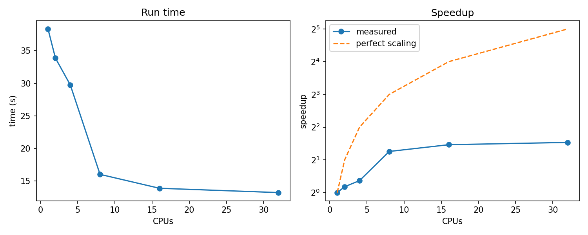
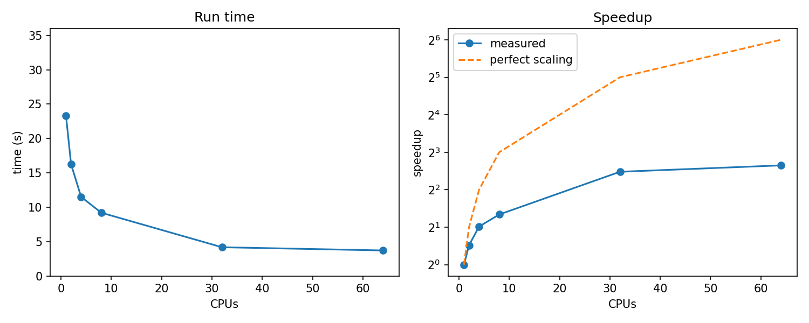

All in One View
Content from Introduction
Last updated on 2026-11-05 | Edit this page
Estimated time: 12 minutes
Overview
Questions
- What’s the problem we are trying to solve?
- Is it suitable for a supercomputer?
Objectives
- Run a simple Python script locally and measure runtimes.
Introduction
For this lesson we will role play as a student developing two small functions to implement some well known statistical techniques on relatively large matrices:
- Principal Component Analysis, a dimensionality-reduction technique, useful for summarising many measurements into fewer underlying “factors”.
- Mean pairwise distance calculation, taking the first m rows and computing the average Euclidean distance between every pair of rows
Challenge 1: Run the program.
What is the output of this command? How long it takes?
$ python sweep.py 42Try it a few times with different seed numbers.
OUTPUT
(42, 0.004810541356349191, 109.50135188527557, 23.97225150000304)The last element in the array provides the program runtime.
Challenge 2: What Numpy version do we have?
The code
This is the base code we will be using in this course. You can copy it from here or donwload it with th data zip file.
PYTHON
# sweep.py
import sys, time
import numpy as np
# Creates a relatively large matrix of random numbers (drawn from a standard normal distribution).
# Uses a seed (passed in from the command line) so the data is reproducible —
# same seed → same numbers every time.
# This is essential for science: results must be verifiable.
def make_data(seed, n=12000, p=6000):
return np.random.default_rng(seed).standard_normal((n, p))
# Principal Component Analysis, a dimensionality-reduction technique;
# useful for summarising many measurements into fewer underlying "factors"
# The function below uses BLAS/LAPACK heavily: threaded and sensitive to CPU kernels
def pca_variance(X, k=10):
# Centre the data (subtract each column's mean).
Xc = X - X.mean(axis=0)
# Build the covariance matrix
cov = Xc.T @ Xc / (len(Xc) - 1)
# compute eigenvalues
w = np.linalg.eigvalsh(cov)[::-1]
#Return the fraction of total variance explained by the top 10 components
return w[:k].sum() / w.sum()
# Compute mean pairwise distance
# Takes the first m rows and computes the average Euclidean distance between every pair of rows
# deliberately naive loop: single-threaded, vectorise it later
def mean_pair_distance(X, m=800):
total = 0.0
for i in range(m):
for j in range(i + 1, m):
total += np.sqrt(((X[i] - X[j]) ** 2).sum())
return total / (m * (m - 1) / 2)
if __name__ == "__main__":
seed = int(sys.argv[1])
t0 = time.perf_counter()
X = make_data(seed)
out = (seed, pca_variance(X), mean_pair_distance(X), time.perf_counter() - t0)
np.savetxt(f"result_{seed}.csv", [out], delimiter=",")
print(out)- A relatively simple program can become a challenge when we need to scale up.
- For example, when we need to handle bigger datasets in disk or memory.
- Or we need to work with more complex models that require more compute power (High Performance Computing or HPC).
- Or when we need to run the program many many times (High Throughtput Computing or HTC).
- Or all of the above…
Content from Connecting to Falcon - SSH keys
Last updated on 2026-11-05 | Edit this page
Estimated time: 40 minutes
Overview
Questions
- How can I connect to Falcon without typing my password every time?
- What do the public and private keys do, and which one can I share?
- How can I make connections quicker and safer to use?
Objectives
- Create an SSH key pair and protect it with a passphrase.
- Install the public key on Falcon and test it.
- Use an SSH config file to connect with a short name.
- Use ssh-agent with a time limit so you type your passphrase less often.
Detailed instructions
This episode is a guided practical. The complete step-by-step instructions, are in our SSH keys documentation page. Keep it open: you will need it for the exact commands, and it is the page to come back to after the course.
Why bother?
Our researcher has a Python script that is slow, and before we can do anything about that she needs to get onto Falcon. Count how many times a password is typed in an ordinary working session:
BASH
ssh c.myuser@falconlogin.cf.ac.uk # password
scp sweep.py c.myuser@falconlogin.cf.ac.uk:. # password again
ssh c.myuser@falconlogin.cf.ac.uk # and again after a dropped connectionLater in the day we will use tools such as rsync and tmux, which all open their own connections. SSH keys remove the repeated password prompts, and they are also harder to steal than a password, because the secret part never leaves your computer. SSH keys can also be used to work with other useful applications like VS Code.
How do keys work?
A key pair is two files created together:
- the public key goes on Falcon and is not secret, like a padlock you can hand out freely;
- the private key stays on your computer, like the only key that opens the padlock.
When you connect, Falcon challenges your computer to prove it holds the private key matching the public key on file. The private key itself is never sent.
Never share your private key
Anyone who has your private key can pretend to be you on Falcon. The passphrase you set protects the file if it is ever copied. Only the file ending in .pub is copied anywhere.
Creating a key pair
Open Terminal (Mac) or PowerShell (Windows) and run ssh-keygen. We choose a modern key type, and a file name that says what the key is for:
OUTPUT
Generating public/private ed25519 key pair.
Enter file in which to save the key (/Users/myuser/.ssh/id_ed25519): /Users/myuser/.ssh/id_ed25519_falcon
Enter passphrase for "/Users/myuser/.ssh/id_ed25519_falcon" (empty for no passphrase):
Enter same passphrase again:
Your identification has been saved in /Users/myuser/.ssh/id_ed25519_falcon
Your public key has been saved in /Users/myuser/.ssh/id_ed25519_falcon.pubChoose a passphrase you will remember. Nothing appears on screen while you type it.
Challenge
Challenge: which file goes where?
ssh-keygen created two files, id_ed25519_falcon and id_ed25519_falcon.pub.
Which one is copied to Falcon? Which one must never leave your computer?
A colleague emails you “here is my key for Falcon” and attaches id_ed25519_falcon. What has gone wrong?
- The public key, id_ed25519_falcon.pub.
- The private key, id_ed25519_falcon.
- They sent their private key. Anyone who receives it (and cracks or guesses the passphrase, if there is one) can log in as them. They should delete the email, remove the matching public key from ~/.ssh/authorized_keys on Falcon and create a new key pair.
Installing the public key on Falcon
Falcon does not trust the key yet, so this one step uses your password. On a Mac or Linux, ssh-copy-id does the work:
On Windows, use the PowerShell command in the documentation page,
because ssh-copy-id does not exist there.
Now test it. You should be asked for the passphrase of your key (not your Falcon password):
OUTPUT
Enter passphrase for key '/Users/myuser/.ssh/id_ed25519_falcon':
....
[c.myuser@cfl2 ~]$A short name with an SSH config file
Typing the key path and the long host name every time is tedious. An
SSH config file stores them under a short name. Create
~/.ssh/config (on Windows,
C:\Users\myuser\.ssh\config) with:
Host falcon
HostName falconlogin.cf.ac.uk
User c.myuser
IdentityFile ~/.ssh/id_ed25519_falcon
IdentitiesOnly yes
ServerAliveInterval 60The same name works for scp, rsync and VS Code.
Challenge
Challenge: connect with a short name
- Create the config entry above with your own username.
- From your own computer (not on Falcon), run a single command on Falcon without opening a shell and show which login node you reached.
- Copy
sweep.pyto your home directory on Falcon with scp, using the short name.
Typing the passphrase less often: ssh-agent
A passphrase on every connection gets tedious. An SSH agent keeps your unlocked key in memory so you type the passphrase once. Give the key a lifetime, so the agent forgets it after a while:
After eight hours SSH asks for the passphrase again. This is
intentional: it limits how long an unlocked key sits in memory, and it
means you keep remembering the passphrase. On a Mac we do not use
--apple-use-keychain, because that would store the
passphrase permanently and you would never need to type it. Windows
needs the agent service switched on first, which is covered in the
documentation page.
Challenge
Challenge: why does it still ask?
Each of these happens after following the steps above. What is the most likely cause, and what would you check first?
-
ssh falconasks for your Falcon password, not the key passphrase. -
ssh falconsays Permission denied (publickey). -
ssh-addsays Could not open a connection to your authentication agent. - You type a passphrase, but the prompt is empty and you think nothing is happening.
- The key was not accepted. Check that the .pub file (not the private
key) was installed, that the username is right and that IdentityFile
points to the private key. Add
-vto see which keys SSH offers. Use-vvvfor more details. - Falcon rejected the key and has no other method to offer. Same checks as above, and check the permissions of ~/.ssh (700) and ~/.ssh/authorized_keys (600) on Falcon.
- The agent is not running. Start it (see the documentation page for your operating system).
- Nothing is echoed while you type a passphrase, so this is normal. Type it and press Enter.
- A key pair has a public key (installed on Falcon, safe to share) and a private key (never shared).
- Protect the private key with a passphrase.
- An SSH config entry gives the connection a short name that
ssh,scp,rsyncand VS Code all understand. - Add the key to an agent with
-tso the passphrase is remembered for a limited time.
Instructor notes
Timing. About 25 minutes of live coding and 15 of exercises. Do the “before” demo first (type the password three times) so the gain is visible.
Mixed audience. Demonstrate on your own system, but say aloud what is different on Windows (paths, no ssh-copy-id, agent service) and have a Windows machine or screenshots ready for PuTTY and MobaXterm. Ask PuTTY and MobaXterm users to follow the documentation page while you demonstrate the concepts.
Common problems.
- Nothing is shown while typing a passphrase, and people think the terminal is frozen.
- Confusing the Falcon password with the key passphrase.
- Windows: Notepad saves the config file as config.txt; the .ssh folder does not exist yet; paths use backslashes.
- PuTTYgen: the Save public key button produces a format Falcon cannot read.
- MobaXterm: its local terminal has a different home directory from Windows.
- Someone sends or pastes the private key. Treat it as a teaching moment and have them regenerate the key.
Fallback. The rest of the lesson does not depend on keys. If someone cannot get them working in the time, they can keep using their password and fix it afterwards with the documentation page or by contacting support.
Fallback. The rest of the lesson does not depend on keys. If someone cannot get them working in the time, they can keep using their password and fix it afterwards with the documentation page or by contacting support.
Content from Finding the software and libraries you need
Last updated on 2026-11-05 | Edit this page
Estimated time: 35 minutes
Overview
Questions
- Where do Python and NumPy come from on Falcon, and is the Python on the login node the one I should use?
- How do I search for software, including Python packages hidden inside bundle modules?
- How do I choose between several versions of the same software?
- Why must I not run my script on the login node?
Objectives
- Explain why the system Python on the login node is not the one to use, and why compute work must not run there.
- Search for software with
module spiderand understand what an extension is. - Make
module availshow extensions withLMOD_AVAIL_EXTENSIONS. - Read a module name and choose a consistent set of modules.
- Load modules and check that the right Python and NumPy are being used.
The first thing our researcher meets
Our researcher’s script needs Python and NumPy. After logging in to Falcon, she tries Python:
OUTPUT
Python 3.9.25 (main, Aug 6 2026, 00:00:00)
[GCC 11.5.0 20240719 (Red Hat 11.5.0-14)] on linux
Type "help", "copyright", "credits" or "license" for more information.PYTHON
>>> import numpy as np
>>> np.__path__
['/usr/lib64/python3.9/site-packages/numpy']
>>> np.__version__
'1.23.5'Python and NumPy are both there. Can she just run her script?
This is the Python that comes with the operating system, and it is not the one to use for your work:
- Its versions are whatever the operating system provides, which may be older than your code expects.
- It is managed with the operating system rather than as part of the software stack we install and test for the compute nodes.
- You cannot switch it for another version, and a script that depends on it is harder to reproduce later.
There is a bigger problem, too.
Why not run the script on the login node?
The login node is shared by everyone, and it is a very large machine. Check how many CPUs Python can see:
OUTPUT
192 192Libraries such as NumPy do their heavy linear algebra with a
multi-threaded library (BLAS/LAPACK), and by default it starts
one thread for every CPU it can see. Run our script
here and a single python command quietly tries to use all
192 CPUs. Everyone else’s shells, editors and file transfers slow down,
and the script itself does not run faster, because the problem is too
small to use 192 threads well.
Please do not run the script on the login node
Use the login node to edit files, submit jobs and check results. Run
anything that computes through Slurm, using sbatch or an
interactive allocation, where you get only the CPUs you asked for. We
will look at controlling the thread count properly when we write the job
script.
So where should we get Python and NumPy from? Falcon provides software through environment modules (Lmod), and each module sets up your shell to use one piece of software. Maybe NumPy has a module of its own?
OUTPUT
Lmod has detected the following error: These module(s) or extension(s) exist but cannot be loaded as requested: "numpy"
Try: "module spider numpy" to see how to load the module(s).And searching the list of available modules does not help either:
OUTPUT
No module(s) or extension(s) found!
If the avail list is too long consider trying:
"module --default avail" or "ml -d av" to just list the default modules.
"module overview" or "ml ov" to display the number of modules for each name.
Use "module spider" to find all possible modules and extensions.
Use "module keyword key1 key2 ..." to search for all possible modules matching any of the "keys".So is NumPy on Falcon as a module or not?
Modules and extensions
Many Python packages are not installed as separate modules. They are
installed together as a bundle, and each package inside
the bundle is an extension of that module. For example,
one module can provide Python itself plus NumPy, SciPy and pandas.
Listing every extension in module avail would bury the list
of modules in thousands of lines, so they are hidden by default.
There are two ways to see them.
Searching with module spider
module spider searches all the software on the system,
including extensions:
OUTPUT
----------------------------------------------------------------------------
numpy:
----------------------------------------------------------------------------
Versions:
numpy/1.21.3 (E)
numpy/1.25.1 (E)
numpy/1.26.2 (E)
numpy/1.26.4 (E)
numpy/2.3.1 (E)
numpy/2.3.2 (E)
Names marked by a trailing (E) are extensions provided by another module.
----------------------------------------------------------------------------
For detailed information about a specific "numpy" package (including how to load the modules) use the module's full name.
Note that names that have a trailing (E) are extensions provided by other modules.
For example:
$ module spider numpy/2.3.2
----------------------------------------------------------------------------The (E) marks an extension. Ask about one version to
find out which module provides it:
OUTPUT
----------------------------------------------------------------------------
numpy: numpy/1.25.1 (E)
----------------------------------------------------------------------------
This extension is provided by the following modules. To access the extension you must load one of the following modules. Note that any module names in parentheses show the module location in the software hierarchy.
SciPy-bundle/2023.07-gfbf-2023a
Names marked by a trailing (E) are extensions provided by another module.
So the module to load for this course is
SciPy-bundle/2023.07-gfbf-2023a, not
numpy.
Reading a module name
SciPy-bundle/2023.07-gfbf-2023a| Part | Meaning |
|---|---|
SciPy-bundle |
the software (a bundle of Python packages) |
2023.07 |
the version of the bundle |
gfbf-2023a |
the toolchain: the compiler and maths libraries it was built with, and its release generation |
The toolchain matters. Modules built with the same toolchain
generation (here 2023a) are designed to work together.
Do not mix generations in one session (for example a
2023a module with a 2024a one), because
mismatched libraries can cause confusing errors.
Loading a module also loads what it depends on. Load it, then check what you got:
BASH
module load SciPy-bundle/2023.07-gfbf-2023a
module list
which python
python -c "import numpy; print(numpy.__version__, numpy.__file__)"You should now see Python and NumPy from the module tree (the path
starts with the software directory, not /usr), instead of
the 3.9 and 1.23.5 we saw at the start. This check is a cheap,
one-second command, so it is fine on the login node. Running the script
is not.
Challenge: find the software
Start with a clean session: module purge.
-
module spider numpylists several versions. Which module provides the newest one? - List which other extensions that module contains, for example whether it includes SciPy and pandas.
- Load that module and print the NumPy version and where it was imported from.
-
module spider numpyshows the versions. Runmodule spider numpy/2.3.2, and the module under “provided by the following modules” is the one to load. -
module spider SciPy-bundle/2025.07-gfbf-2025bormodule help SciPy-bundle/2025.07-gfbf-2025bdescribes the module and lists the extensions it contains. After settingLMOD_AVAIL_EXTENSIONS=yes,module avail scipyandmodule avail pandasshow them too.
Challenge: choosing consistently
If you also need a plotting library.
module avail matplotlib suggests a module from the
2024a toolchain, among others, but your NumPy module uses
2023a.
- What can go wrong if you load both?
- What would you do instead?
- Modules from different toolchain generations were built against different compilers and libraries. Loading both can fail outright or load clashing libraries, so a script that imports one package may crash with errors that do not mention modules at all.
- Look for a matching module:
module load matplotlib/3.7.2-gfbf-2023awill load a set of libraries compatible with our2023atoolchain. If you need additional libraries and you cannot find them available for your selected toolchain, ask us.
Optional challenge: how many CPUs will my job see?
You saw 192 on the login node. Once you have an interactive allocation (see the interactive sessions episode) that asked for 4 CPUs, run the same one-liner inside it. Do the two numbers differ, and what does that tell you about where to run your script?
Inside a Slurm job the second number
(len(os.sched_getaffinity(0))) should be the number of CPUs
you were allocated (for example 4), while os.cpu_count()
may still report all the CPUs of the node. The allocation limits where
your processes can run, which is why the compute nodes are the place for
your script.
- Python packages are often extensions inside a bundle module, and
module load numpyfails if there is no module with that name. -
module spiderfinds everything, including extensions, and tells you which module to load. -
export LMOD_AVAIL_EXTENSIONS=yesmakesmodule availshow extensions as well. - A module name has the form software/version-toolchain, and modules in one session should share a toolchain generation.
- In job scripts use
--login,module purge, and full module names.
Timing. About 20 minutes of live coding and 15 of exercises. Let learners predict the result of each command before you run it. If time is short, drop the optional CPU-count challenge, which also fits the interactive sessions episode.
Do not run sweep.py on the login node in the
session. The os.cpu_count() check makes the point
without loading the node. The actual effect is shown later on a compute
node, with htop open next to the job.
Check before the session.
- Run every command on the node type used for the course and replace the illustrative outputs with the real ones. The Python and NumPy session at the start is from the login node.
- Make sure there is something to find: a NumPy version from at least two toolchain generations, so the choosing challenge works. Adjust the matplotlib example to match what is installed.
- Confirm that
os.sched_getaffinity(0)inside a Slurm job shows the allocated CPUs on Falcon, because it depends on how Slurm’s CPU binding is configured. - If Falcon uses a spider cache, very recently installed software may not show up until it is refreshed, which can confuse a live demo.
Software differs by architecture. The software trees
on Falcon differ by CPU type, which you can see in the install paths
(for example .../amd/zen4/... versus
.../intel/cascadelake/...). The modules listed can
therefore depend on the node you are on. This links to the architectures
episode, and an optional extension is to run
module spider numpy in an interactive session on a
different node type and compare. Confirm that this matches how Falcon is
configured before presenting it.
Common problems.
- Typing
module load numpyand concluding that NumPy is missing. - Mixing toolchain generations, which produces errors that do not mention modules.
- Piping
module availintogrepwithout2>&1. - Forgetting
--loginin a job script, somodule: command not found. - Running a “quick test” of the real script on the login node.
Content from Estimating resources
Last updated on 2026-11-05 | Edit this page
Estimated time: 12 minutes
Overview
Questions
- How much resource should I ask for?
- How do I submit a job, follow it and find its output?
- Is my script faster on Falcon than on my laptop?
Objectives
- Use the CPUs, memory and run time of your laptop as a starting point for a resource request.
- Explain the difference between tasks and CPUs per task.
- Submit a job with
sbatch, follow it withsqueueand read its output files. - Compare the run time on Falcon with the run time on your laptop.
Our researcher has her script working on her laptop, and the software
is available on Falcon. Now she needs to run it there. On a laptop you
just type python sweep.py 42. On Falcon you describe what
you need in a job script, and the scheduler runs it for
you on a compute node.
How much resource should I ask for?
Slurm needs to know three things before it can place your job: how many CPUs, how much memory and for how long. If you have no idea yet, the best starting point is the machine where the script already runs: your laptop.
Find out what your laptop has:
If you prefer a graphical tool, the Task Manager (Windows) or Activity Monitor (macOS) shows the same numbers.
Next, time the script on your laptop, so that you have something to compare with later:
BASH
time python sweep.py 42 # macOS and Linux
Measure-Command { python sweep.py 42 } # Windows PowerShellNote the real (or total) time. The script also
writes its own measured time into result_42.csv; you will
meet that in a moment.
We now have a first guess for each setting:
| What Slurm needs | Option | First guess from the laptop |
|---|---|---|
| CPUs | --cpus-per-task |
the number of CPUs your laptop has, for example 8 |
| Memory | --mem |
the memory your laptop has, for example 16G |
| Run time | -t |
a few times the time you measured, for example 5 minutes |
This is a starting point, not the answer
Your laptop’s memory is shared with the operating system and your browser, and your script probably uses far less than the full amount. The run time on Falcon may differ from the laptop. We start from the laptop numbers because it is a sensible first guess, and in the efficiency episode we measure what the job really used and adjust.
Two things to keep in mind meanwhile:
- If the job runs out of time, Slurm stops it (state
TIMEOUT), so leave a safety margin on the first run. - If it needs more memory than you asked for, Slurm kills it (state
OUT_OF_MEMORY).
Asking for far more than you need is also not free: bigger and longer requests usually wait longer in the queue.
Tasks or CPUs?
Many people’s first attempt at “8 CPUs” is --ntasks=8.
That is a different thing:
- A task is one process, for example one MPI rank.
--ntasks=8asks for eight separate processes, which may be placed on different nodes. -
CPUs per task are the CPUs that each process can
use for its own threads.
--cpus-per-task=8asks for eight CPUs for one process, always on the same node.
Our sweep.py is one Python process, and
NumPy’s linear algebra library runs several threads inside it. That is
one task with several CPUs:
With --ntasks=8 --cpus-per-task=1 the job script would
still run a single Python process. If Slurm spread the eight tasks over
several nodes, the CPUs on the other nodes would be reserved for you and
sit idle. Even when the tasks happen to land on one node, the request
does not say what you mean.
Challenge: tasks or CPUs?
What would you request for each of these?
A single-threaded Python script.
A NumPy script that uses a multi-threaded linear algebra library on 8 CPUs.
An MPI program that starts 16 processes, each using one CPU.
An MPI program that starts 4 processes, each using 8 OpenMP threads. ::::::::::::::::::::::::::::::::::::: solution
--ntasks=1 --cpus-per-task=1--ntasks=1 --cpus-per-task=8--ntasks=16 --cpus-per-task=1--ntasks=4 --cpus-per-task=8(32 CPUs in total)
The rule of thumb: tasks count processes, CPUs per task count the threads inside each process.
::::::::::::::::::::::::::::::::::::::::::::::::
The job script
Open a new file with a text editor and type (or paste) the script.
Save it as sweep-test.sh:
BASH
#!/bin/bash --login
#SBATCH -J sweep-test
#SBATCH -o %x.o.%j
#SBATCH -e %x.e.%j
#SBATCH --ntasks=1
#SBATCH --cpus-per-task=8
#SBATCH --mem=16G
#SBATCH -A <project-code>
#SBATCH -t 00:05:00
#SBATCH -p webmo_teaching
# give us access to numpy (it is an extension of this bundle)
module purge
module load SciPy-bundle/2023.07-gfbf-2023a
python sweep.py 42Line by line:
| Line | Meaning |
|---|---|
#!/bin/bash --login |
run the script with Bash as a login shell |
#SBATCH -J sweep-test |
the name of the job, shown in the queue |
#SBATCH -o %x.o.%j |
standard output goes to this file; %x is the job name
and %j the job number |
#SBATCH -e %x.e.%j |
error messages go to this file |
--ntasks, --cpus-per-task
|
one process with 8 CPUs (see above) |
--mem=16G |
memory for the whole job |
-A <project-code> |
the project the usage is charged to |
-t 00:05:00 |
time limit: 5 minutes |
-p webmo_teaching |
the partition (group of nodes) to run on |
module purge, module load ...
|
the software, as in the previous episode |
python sweep.py 42 |
the command: run the script with seed 42 |
Lines starting with #SBATCH look like comments to Bash,
but Slurm reads them. They must come before the first
command, otherwise they are ignored.
Submit it
Make sure sweep.py is in the same directory (copy it
with scp, which is much more pleasant now that you have SSH
keys), then submit:
OUTPUT
Submitted batch job 853278Follow the job in the queue:
OUTPUT
JOBID PARTITION NAME USER ST TIME NODES NODELIST(REASON)
858933 webmo_tea sweep-te c.c10458 R 0:10 1 cca0030ST is the state: PD means pending (waiting
for resources) and R means running. The job disappears from
the list when it finishes. If you change your mind,
scancel 853278 removes it.
When the job has finished, look at what it left behind:
OUTPUT
result_42.csv sweep-test.e.858933 sweep-test.o.858933 sweep-test.sh sweep.py-
sweep-test.o.858933is the standard output, which is empty for our script. -
sweep-test.e.858933holds the error messages. Always look here first if something went wrong. -
result_42.csvis the result of the script.
OUTPUT
42.0000,0.0048,109.5014,19.3128The columns are the seed, the fraction of variance explained, the mean distance, and the time the script measured for itself in seconds (the last number).
Is Falcon faster than my laptop?
There are two clocks to look at. The script measures its own run time, and Slurm measures the time of the whole job, which includes loading the module and starting Python:
OUTPUT
JobID Elapsed NCPUS State
------------ ---------- ---------- ----------
858933 00:00:16 8 COMPLETED
858933.batch 00:00:16 8 COMPLETED
858933.exte+ 00:00:16 8 COMPLETEDChallenge: Falcon against my laptop
Fill in this table, using the same seed on both machines:
| Laptop | Falcon | |
|---|---|---|
| CPUs | ||
Time reported by the script (last column of
result_42.csv) |
||
Total time (time on the laptop, Elapsed
from sacct) |
- Which was faster?
- Does the outcome match what you expected from a supercomputer?
- What might explain it? ::::::::::::::::::::::::::::::::::::: solution
The results differ between laptops, so there is no single answer. Many people find the times are similar, and some find Falcon slower.
Possible reasons, which we will test during the lesson:
- A single core of a modern laptop can be as fast as, or faster than, a single core on a cluster node. A cluster is powerful because it has many cores and nodes, not because each one is faster.
- Part of our script is a plain Python loop that runs on one core, however many we ask for.
- Only the linear algebra part can use several CPUs, and the benefit of extra CPUs falls off quickly.
::::::::::::::::::::::::::::::::::::::::::::::::
What happens if I run it again?
Run the job a second time and look at result_42.csv:
The file has the same name and is silently overwritten. The first result is gone, the second job’s output files are new, and we have no record of which job produced which result. That is fine for a test, but not for the hundreds of runs we are about to do. We deal with it in the next episode.
Quick reference
| Command | What it does |
|---|---|
sbatch script.sh |
submit a job |
squeue -u $USER |
list your pending and running jobs |
scancel <jobid> |
cancel a job |
sacct -j <jobid> --format=JobID,Elapsed,NCPUS,State |
look at a finished job |
- Start your resource request from the machine where the code already runs, then measure and refine.
-
--ntaskscounts processes and--cpus-per-taskcounts threads per process. A multi-threaded Python script is one task with several CPUs. -
#SBATCHlines must come before the first command. -
sbatchsubmits,squeueshows the queue,scancelcancels andsacctshows finished jobs. - Look in the
.efile first when something goes wrong. - A supercomputer is many computers, not a faster computer: a first run is often no faster than a laptop.
- Re-running a job in the same directory overwrites its results.
Timing. About 25 minutes of live coding and 15 of exercises. Have learners type the script rather than paste it, and submit it all at about the same time. The training partition should keep the wait short, but check it beforehand.
The resource values are deliberately generous. 16 GB
is far more than this script needs, and 8 CPUs are far more than it can
use. This sets up the efficiency episode, where seff shows
the waste. Do not fix it now; say that we will come back to it.
Check before the session.
- Replace the illustrative outputs with the real ones, and the project and partition placeholders.
- Run the script on a few different laptops, or have your own timings, so you know what to expect. A recent laptop with fast cores may beat a cluster core, which is good for the message but should not come as a surprise.
- Confirm that the
time,sysctland PowerShell commands work on the machines learners will use. - The tab group syntax (
tab) depends on your Workbench version. If it does not render, use three separate headings.
Common problems.
-
Invalid account or account/partition combination specified: the project or partition is wrong or the learner does not belong to the project. - A script written or pasted in a Windows editor can contain Windows
line breaks. Slurm then complains about DOS line breaks, or Bash reports
a bad interpreter. Create or edit the file on Falcon, or convert it with
dos2unix. -
#SBATCHlines placed after a command are silently ignored. -
module: command not foundwhen--loginis missing from the first line. - The job ends with
TIMEOUTorOUT_OF_MEMORYwhen learners reduce the limits too far. Use it as a teaching moment. - Learners look in the
.ofile for errors instead of the.efile. - Someone runs
python sweep.py 42directly on the login node instead of submitting it. Remind them of the previous episode.
Content from Making the job script safe
Last updated on 2026-11-05 | Edit this page
Estimated time: 40 minutes
Overview
Questions
- How do I stop one job from overwriting the results of another?
- How can the job script tell me about the job it is running in?
- How do I make a job script stop when something goes wrong, instead of carrying on?
- Where should a job write its files, and who cleans up afterwards?
Objectives
- Use Slurm environment variables to give files and directories unique names.
- Protect a script against typos and failures with
set -euo pipefail. - Use curly brackets around variable names to avoid silent naming mistakes.
- Run a job in a scratch directory, copy the results back and clean up.
At the end of the last episode we ran the same job twice and the
second run silently replaced result_42.csv. In a few
episodes our researcher will run hundreds of jobs, so the job script
needs to be more careful first. Starting from the script we had:
BASH
#!/bin/bash --login
#SBATCH -J sweep-test
#SBATCH -o %x.o.%j
#SBATCH -e %x.e.%j
#SBATCH --ntasks=1
#SBATCH --cpus-per-task=8
#SBATCH --mem=16G
#SBATCH -A <project-code>
#SBATCH -t 00:05:00
#SBATCH -p <partition>
module purge
module load SciPy-bundle/2023.07-gfbf-2023a
python sweep.py 42Slurm tells the job about itself
When a job starts, Slurm defines a set of environment
variables that describe it. Add this line to the script, submit
it, and look at the .o file:
OUTPUT
SLURM_CPUS_PER_TASK=8
SLURM_JOB_ID=853278
SLURM_JOB_NAME=sweep-test
SLURM_JOB_NODELIST=<node>
SLURM_JOB_PARTITION=<partition>
SLURM_MEM_PER_NODE=16384
SLURM_NTASKS=1
SLURM_SUBMIT_DIR=/shared/home/c.myuser/sweep
...The list is long. These are the ones we will use most:
| Variable | What it holds |
|---|---|
SLURM_JOB_ID |
the unique number of this job |
SLURM_JOB_NAME |
the name given with -J
|
SLURM_SUBMIT_DIR |
the directory you ran sbatch from |
SLURM_CPUS_PER_TASK |
the CPUs per task you asked for (only set if you asked) |
SLURM_JOB_NODELIST |
the node(s) the job runs on |
Two uses follow immediately. The job number is unique, so it makes file and directory names that no other job can share. And values such as the CPU count come from the request itself, so the script does not need editing when the request changes.
Challenge: which variable?
Which Slurm variable would you use to:
- give a result file a name that no other job will use?
- copy a file back to the directory the job was submitted from?
- tell numpy how many threads to use, matching the CPUs you requested?
SLURM_JOB_IDSLURM_SUBMIT_DIR-
SLURM_CPUS_PER_TASK, for exampleexport OMP_NUM_THREADS=${SLURM_CPUS_PER_TASK}
Curly brackets protect variable names
We want result files called something like
result_42_853278.csv, built from a seed and the job number.
Here is a natural first attempt, which you can test directly in the
terminal with no job involved:
OUTPUT
result_853278.csvThe seed has vanished, and there is no error message. Bash reads
$SEED_ as a variable called SEED_, because the
underscore is allowed in variable names. That variable does not exist,
so it expands to nothing. Curly brackets mark exactly where the name
ends:
OUTPUT
result_42_853278.csvAlways write ${NAME}, even when it is not strictly
needed. It costs nothing and removes a whole class of silent mistakes.
If a path may contain spaces, put the whole thing in double quotes too:
"${WORKDIR}".
Making the script stop when something goes wrong
By default Bash carries on after an error. For a job script that is
dangerous, because later commands then run on the results of a mistake.
Three settings fix the worst cases. Put them at the top of the script,
after the #SBATCH lines:
| Setting | What it does |
|---|---|
-e |
stop the script as soon as a command fails |
-u |
treat a variable that was never set as an error |
-o pipefail |
a pipeline fails if any command in it fails, not only the last one |
Write it as
set -euo pipefail
-o pipefail is a separate option, written as two words.
Something like set -eu -pipefail does not turn it on. Bash
reads -pipefail as a string of unrelated one-letter
options.
Each one is easiest to understand through the mistake it catches. These run in a terminal and do not need a job.
-u catches a mistyped variable. Without
it, the typo below silently expands to nothing:
OUTPUT
Running seedOUTPUT
bash: SEDD: unbound variableThe same option turns the earlier $SEED_ mistake into an
error you can see.
-e stops a script that has already gone
wrong. Imagine the work directory does not exist:
OUTPUT
bash: cd: /no/such/directory: No such file or directory
Now working in /home/c.myuserWithout -e, the script carried on in the wrong
directory. With set -e it stops at the failed
cd. In a real job that could be the difference between
writing files in the wrong place and a clean failure.
-o pipefail catches failures inside a
pipeline. A very common way to keep a log is to pipe the output
through tee:
OUTPUT
exit status: 0false failed, but the pipeline reported success because
tee succeeded. After set -o pipefail:
OUTPUT
exit status: 1The same applies to Slurm. A job script reports the exit status of
its last command. If python fails and a
later command succeeds, Slurm records the job as COMPLETED
even though no result was produced. With set -e, the
failure is recorded as FAILED, with the exit code, which
you can see with sacct.
Challenge: what would have caught it?
For each mistake, say which of -e, -u,
-o pipefail or curly brackets would have prevented a silent
failure.
-
cp result_$SEED_$SLURM_JOB_ID.csv ${SLURM_SUBMIT_DIR}copies the wrong file or none at all. -
cd ${WROKDIR}(a typo) is followed by commands that write files in the current directory. -
python sweep.py 4r | tee run.logfails, but the job ends asCOMPLETED. -
pyton sweep.py 42(a typo) is followed bycp result_42.csv ....
- Curly brackets (
${SEED}_) prevent it.set -uturns it into a visible error. -
set -ustops the script becauseWROKDIRwas never set. -
set -o pipefail, together withset -eso that the failure ends the script. -
set -estops atpyton: command not found, so the job is markedFAILEDand the copy is never attempted.
A safety net, not a guarantee
set -e has exceptions: commands that are part of an
if test or are followed by || are allowed to
fail. Treat it as a net for common accidents, not a replacement for
checking results.
Some set-up scripts (for example conda activate, and
occasionally a module) refer to variables that are not set. If a job
stops with an “unbound variable” error that comes from inside one of
them, wrap just that line in set +u and
set -u.
Working on scratch
So far the job wrote its results next to the script. Falcon also has
a large, fast area for job data called scratch, at
/scratch/SCWFXXXXX/, where SCWFXXXXX is your
project code. A tidy pattern is:
- create a new, unique directory on scratch for each job;
- copy the inputs there and run the job in it;
- copy the results you want to keep back to your own directory, with unique names;
- delete the scratch directory.
Scratch has a quota: by default 3 TB and 3 million files. Both limits count, and files left behind by finished jobs count towards them.
Challenge: which limit comes first?
Another application leaves 2,000 files and 5 GB of data in its scratch directory after every job, and nobody removes them. How many jobs can you run before you reach each limit of 3 TB and 3 million files? Which one stops you first?
- Files: 3,000,000 / 2,000 = 1,500 jobs.
- Space: 3 TB is about 3,000 GB, and 3,000 GB / 5 GB = about 600 jobs.
The space quota is reached first, after about 600 jobs. Either one makes new writes fail, so jobs that run after that point can fail in confusing ways. Cleaning up after each job avoids the problem.
The improved job script
Putting it all together:
BASH
#!/bin/bash --login
#SBATCH -J sweep-test
#SBATCH -o %x.o.%j
#SBATCH -e %x.e.%j
#SBATCH --ntasks=1
#SBATCH --cpus-per-task=8
#SBATCH --mem=16G
#SBATCH -A <project-code>
#SBATCH -t 00:05:00
#SBATCH -p <partition>
# stop on errors, unset variables and failures inside pipelines
set -euo pipefail
module purge
module load SciPy-bundle/2023.07-gfbf-2023a
# use the CPUs we asked for (more about this in the next episode)
export OMP_NUM_THREADS=${SLURM_CPUS_PER_TASK}
# the seed is the first argument of the script, 42 if none is given
SEED=${1:-42}
# a unique work directory on scratch for this job
WORKDIR=/scratch/SCWFXXXXX/${USER}/sweep-test/${SLURM_JOB_ID}
mkdir -p "${WORKDIR}"
# copy inputs to the work directory and change dir
cp "${SLURM_SUBMIT_DIR}/sweep.py" "${WORKDIR}"
cd "${WORKDIR}"
echo "Job ${SLURM_JOB_ID}: seed ${SEED} on $(hostname) with ${SLURM_CPUS_PER_TASK} CPUs"
# run main program
python sweep.py "${SEED}"
# copy outputs back, with a unique name
cp "result_${SEED}.csv" "${SLURM_SUBMIT_DIR}/result_${SEED}_${SLURM_JOB_ID}.csv"
# clean up scratch (only reached if everything above succeeded)
cd "${SLURM_SUBMIT_DIR}"
rm -rf -- "${WORKDIR:?}"What changed:
-
set -euo pipefailprotects the whole script. -
export OMP_NUM_THREADS=${SLURM_CPUS_PER_TASK}makes numpy use exactly the CPUs we asked for. If we change the request, this line follows. If--cpus-per-taskis missing from the script,set -umakes the job fail immediately instead of guessing. -
SEED=${1:-42}takes the seed from the command line (sbatch sweep-test.sh 43), with 42 as the default. We can now run different seeds without editing the file. - The work directory and the result file both contain
${SLURM_JOB_ID}, so nothing is overwritten. - Everything in
${...}is quoted, in case a path contains spaces. - The cleanup comes last. If any earlier step fails,
set -estops the script before it, so the scratch directory and its files are kept for you to investigate.
Be careful with rm -rf
${WORKDIR:?} stops the script with an error if
WORKDIR is unset or empty. Without it, a mistake such as
rm -rf ${WORKDIR}/* with an empty variable becomes
rm -rf /*. Always build deletion commands from a variable
that cannot be empty, and never delete with a wildcard if you can name
the directory.
Submit it twice, with two different seeds:
OUTPUT
Submitted batch job 853301
Submitted batch job 853302When both have finished:
OUTPUT
result_42_853301.csv result_43_853302.csv sweep-test.e.853301 sweep-test.e.853302
sweep-test.o.853301 sweep-test.o.853302 sweep-test.sh sweep.pyEvery result and every log has its own name.
What is left behind?
The script removes its scratch directory on success. If a job fails, or if you choose to keep data, the directory stays. Look for old directories now and then:
Check what you are about to delete before you delete it. For example, list the directories that have not been touched for 30 days, and only then remove them:
You can add the removal to the job script, as above, or clean up by hand afterwards. Automatic cleanup is the safer default for quota, and keeping data from failed jobs is the safer default for debugging, which is why the script removes the directory only after everything succeeded.
- Slurm defines environment variables such as
SLURM_JOB_ID,SLURM_SUBMIT_DIRandSLURM_CPUS_PER_TASKinside every job. - Put
${SLURM_JOB_ID}in file and directory names so that jobs cannot overwrite each other. - Always write
${NAME}with curly brackets, so Bash cannot misread where a variable name ends. - Start job scripts with
set -euo pipefailto stop on errors, unset variables and failed pipelines. - Run in a unique scratch directory, copy back what you need and delete the directory only after everything succeeded.
- Scratch has a quota on space and on the number of files. Leftover files count against both.
Timing. About 25 minutes of live coding and 15 of
exercises. The small echo and cd
demonstrations run in a terminal on the login node and need no job, so
they are safe and quick. Do them live and let learners predict each
result first.
Check before the session.
- Replace the illustrative outputs,
SCWFXXXXX, and the project and partition placeholders. Make sure each learner can create a directory under their scratch path. - Fill in the scratch policy and the quota command, and run the commands yourself first.
- Check that
module loadworks underset -uon Falcon. If a module prints an “unbound variable” error, use theset +uworkaround from the callout. - Run the final script once and check that the scratch directory is removed.
A useful extra demonstration. Introduce a deliberate
typo (pyton sweep.py "${SEED}") and submit. Use
sacct to show FAILED with exit code 127, and
ls on scratch to show that the directory was kept. Then
remove set -e and show the same job ending as
COMPLETED even though no result exists. This is the best
demonstration of why -e matters.
This episode prepares later ones.
OMP_NUM_THREADS=${SLURM_CPUS_PER_TASK} is used in the
scaling episode, where the CPU count is changed from the command line
(sbatch -c 4 sweep-test.sh). The seed argument and unique
names lead to array jobs, where SLURM_ARRAY_TASK_ID
provides the seed.
Common problems.
- Windows line endings in a script written elsewhere (see the previous episode).
-
set -eu -pipefailcopied from somewhere: it does not enablepipefail. -
SLURM_CPUS_PER_TASK: unbound variablebecause the script has no--cpus-per-task, which isset -udoing its job. -
rm -rfguards: stress${WORKDIR:?}and never deleting with wildcards. - Learners clean up scratch by hand before the job has finished.
Content from Can more cores make it faster?
Last updated on 2026-11-05 | Edit this page
Estimated time: 40 minutes
Overview
Questions
- If I ask for more CPUs, will my job run faster?
- How do I measure how well a program uses extra CPUs?
- What limits how much faster a program can get?
Objectives
- Run the same job with different numbers of CPUs and collect the timings.
- Plot run time and speedup against the number of CPUs.
- Calculate speedup and efficiency, and explain what they tell you.
- Explain Amdahl’s law and use it to estimate the limit for a program.
- Choose a sensible number of CPUs to request.
In the first job, Falcon was no faster than our researcher’s laptop. She asked for 8 CPUs, so the obvious next thought is: what if I ask for 16, or 64, or a whole node? Instead of guessing, we measure.
Some vocabulary
Let T(N) be the run time of the same job on
N CPUs. Two numbers describe how well the extra CPUs are
used:
speedup(N) = T(1) / T(N) how many times faster than one CPU
efficiency(N) = speedup(N) / N the share of the extra CPUs that is really usedWith perfect scaling, 8 CPUs give a speedup of 8 and an efficiency of 100%. That almost never happens.
Measuring how a fixed problem speeds up as CPUs are added is called a strong scaling test. It is one of the most useful things you can do before running anything big.
Step 1: make the script label its results
We will submit the same job with different CPU counts, so each result file must say how many CPUs produced it. In the job script from the last episode, change the line that copies the result back:
BASH
cp "result_${SEED}.csv" "${SLURM_SUBMIT_DIR}/result_${SEED}_c${SLURM_CPUS_PER_TASK}_${SLURM_JOB_ID}.csv"Result files are now named like result_42_c8_853301.csv.
Our script already sets
OMP_NUM_THREADS=${SLURM_CPUS_PER_TASK}, so numpy uses
exactly the CPUs we ask for. That is why we can vary the request without
editing the script.
Use -c, not -n
We are changing CPUs per task (-c, or
--cpus-per-task), because our script is one process with
several threads. -n changes the number of tasks,
which would not make this script use more CPUs. Options given
on the sbatch command line override the
#SBATCH lines in the script.
Step 2: submit the same job with different CPU counts
OUTPUT
Submitted batch job 853310
Submitted batch job 853311
Submitted batch job 853312
Submitted batch job 853313
Submitted batch job 853314
Submitted batch job 853315-J gives each job a name that includes the CPU count,
which makes the queue and the log files easy to read. Follow the jobs
with squeue -u $USER. They are independent, so they may run
at the same time or in any order. While you wait, carry on reading.
Be considerate, and repeat your runs
- The training partition is shared by the whole class. Stop at 32 CPUs in this exercise. We will show larger counts from earlier measurements.
- Other jobs on the same node can disturb a timing. If a result looks odd, run it again. For anything you plan to report, run each setting three times and use the average (or the shortest time).
Step 3: collect the timings
The script writes its own measured time into the last column of each result file. Collect the CPU count (from the file name) and the time into one table. This uses the curly-bracket habit from the previous episode:
BASH
for f in result_42_c*.csv; do
cpus=${f#result_42_c} # remove the leading "result_42_c"
cpus=${cpus%%_*} # remove everything from the next underscore
secs=$(cut -d, -f4 "${f}") # the 4th column is the time in seconds
echo "${cpus},${secs}"
done | sort -n > timings.csvOUTPUT
1,38.3204
2,33.8575
4,29.7396
8,13.9871
8,13.9994
8,20.1247
16,13.7595
16,14.0474
32,13.2441
...
You can cross-check against what Slurm measured for the whole job, which also includes loading the module and starting Python:
Step 4: plot it
Bring timings.csv to your laptop with scp
(your SSH keys make this painless), or paste the numbers into a
spreadsheet. This small script needs only numpy and matplotlib:
PYTHON
# plot_scaling.py
import numpy as np
import matplotlib.pyplot as plt
data = np.loadtxt("timings.csv", delimiter=",") # columns: CPUs, seconds
cpus, secs = data[:, 0], data[:, 1]
# average the repeated runs for each CPU count
n = np.unique(cpus)
t = np.array([secs[cpus == c].mean() for c in n])
speedup = t[n == 1][0] / t
fig, (ax1, ax2) = plt.subplots(1, 2, figsize=(10, 4))
ax1.plot(n, t, "o-")
ax1.set_xlabel("CPUs")
ax1.set_ylabel("time (s)")
ax1.set_title("Run time")
ax2.plot(n, speedup, "o-", label="measured")
ax2.plot(n, n, "--", label="perfect scaling")
ax2.set_yscale("log", base=2)
ax2.set_xlabel("CPUs")
ax2.set_ylabel("speedup")
ax2.set_title("Speedup")
ax2.legend()
fig.tight_layout()
fig.savefig("scaling.png", dpi=150)
plt.show()What the measurements show
These are measurements from the instructor’s runs on Falcon. Yours will differ in detail but should look similar. The columns are calculated from the times, with repeated runs averaged:
| CPUs | Time (s) | Speedup | Efficiency | CPU-seconds used |
|---|---|---|---|---|
| 1 | 21.88 | 1.00 | 100% | 22 |
| 2 | 18.94 | 1.16 | 58% | 38 |
| 4 | 18.10 | 1.21 | 30% | 72 |
| 8 | 16.39 | 1.34 | 17% | 131 |
| 16 | 15.92 | 1.37 | 9% | 255 |
| 32 | 13.09 | 1.67 | 5% | 419 |
| 64 | 13.49 | 1.62 | 3% | 863 |
| 128 | 95.43 | 0.23 | 0.2% | 12,215 |
CPU-seconds is the number of CPUs multiplied by the run time. It is roughly what the job costs you in usage and in resources that nobody else can use while it runs.
Three things stand out:
- The speedup is small. 32 times as many CPUs gives about 1.7 times the speed.
- The curve flattens. There is no “sweet spot” at 32. The curve is hitting a floor of about 13 seconds, and the extra CPUs beyond a few are doing almost nothing.
- At 128 CPUs the job became about seven times slower than a single CPU. Asking for more resources made things worse, and used about 560 times as many CPU-seconds as the single-CPU run.
Challenge: speedup and efficiency
Using the table above, or your own results:
- Calculate the speedup and efficiency for 8 and for 32 CPUs from the times.
- Which CPU count gives the best efficiency? Which gives the shortest run time?
- Are these the same? What does that tell you about choosing a number of CPUs?
- For 8 CPUs, the speedup is 21.88 / 16.39 = 1.34 and the efficiency is 1.34 / 8 = 17%. For 32 CPUs, the speedup is 21.88 / 13.09 = 1.67 and the efficiency is 1.67 / 32 = 5%.
- The best efficiency is at 1 CPU (100%). The shortest time is at 32 or 64 CPUs, depending on the run.
- They are different, and that is the normal situation: the fastest setting is rarely the efficient one. You have to decide how much extra speed is worth the extra resources. Here, going from 8 to 32 CPUs saves about 3 seconds but costs three times as many CPU-seconds.
- Remember to factor in the additional queue time from larger resource requests.
Why? Amdahl’s law
Our script has two stages:
- A principal component analysis, built on linear algebra routines that can use several CPUs.
- A plain Python loop that computes distances between pairs of rows, which runs on one CPU however many we request.
Extra CPUs only speed up the first stage:
1 CPU : [ serial part ================ ][ parallel part ========== ]
8 CPUs: [ serial part ================ ][ par ]
^ only this part shrinksThis is Amdahl’s law. If a fraction p
of the run time can be spread across CPUs and the rest,
1 - p, cannot, the best possible speedup on N
CPUs is:
speedup(N) = 1 / ( (1 - p) + p / N )As N grows, the p / N term vanishes, and
the speedup can never exceed 1 / (1 - p), however many CPUs
you add.
Parallel fraction p
|
N = 2 | N = 8 | N = 32 | N = 128 | Limit |
|---|---|---|---|---|---|
| 50% | 1.3 | 1.8 | 1.9 | 2.0 | 2 |
| 90% | 1.8 | 4.7 | 7.8 | 9.3 | 10 |
| 99% | 2.0 | 7.5 | 24 | 56 | 100 |
Even a program that is 90% parallel can never be more than 10 times faster, and the last 10% of its run time dominates once you use many CPUs.
For our script, the run time stops falling at about 13 seconds out of
22. So roughly 60% of the time is serial, the parallel fraction
p is about 0.4, and the limit is about
1 / 0.6, or 1.6 times faster than one CPU. That matches the
measurements. (This is an estimate from the curve. In a later episode we
use a profiler to see the serial part directly.)
Challenge: using Amdahl’s law
A program spends 10% of its run time in a part that cannot be parallelised.
- What is the best speedup on 16 CPUs?
- And on 128 CPUs?
- What is the limit, however many CPUs you use?
Here p = 0.9.
-
1 / (0.1 + 0.9/16)= 6.4 -
1 / (0.1 + 0.9/128)= 9.3 -
1 / 0.1= 10
Going from 16 to 128 CPUs (eight times the resources) gains less than 50% in speed.
Challenge: how many CPUs would you ask for?
Based on the results, how many CPUs would you request for this script? Argue your case with the numbers, considering time, efficiency and cost. Is there a single right answer?
There is no single right answer, but every sensible answer is small. A few CPUs (1 to 4) already give nearly all the speedup this script can ever have, and more than 8 gains almost nothing while costing much more. Smaller requests also tend to start sooner, and leave the other CPUs of the node for other users.
The bigger lesson is that more CPUs are not the way to speed this script up. Two better ways follow in this course: make the serial part faster by improving the code, and run many copies of the script at the same time, which uses the cluster the way it is meant to be used.
A supercomputer is many computers, not a faster computer
Our researcher does not need one run to finish sooner. She needs hundreds of runs, each with a different seed. Hundreds of independent single-CPU runs have no serial bottleneck at all: every CPU you add really does give more results per hour. That is the idea behind array jobs and GNU Parallel, which come later in the course.
- More CPUs do not automatically mean a faster job. Measure it with a scaling test before asking for many.
- Speedup is
T(1) / T(N)and efficiency is speedup divided by the number of CPUs. - Amdahl’s law: the part of a program that cannot use extra CPUs
limits the speedup to
1 / (1 - p). - The fastest setting is rarely the most efficient. Choose a request that balances run time and cost.
- Asking for too much can make a job slower, and always makes it more expensive. Repeat surprising measurements.
- For many independent runs, run them side by side instead of making one run bigger.
Timing. About 25 minutes plus 15 of exercises. Submit the scaling jobs at the start of the episode, then explain the vocabulary and Amdahl’s law while they run, and come back to collect and plot the results.
Capacity. If the whole class submits 64 or 128 CPU jobs at once, the training partition will fill up. The text limits learners to 32. Show the larger counts from your own measurements.
Investigate the 128-CPU result before the session. The text deliberately lists possible causes rather than naming one, because the data does not settle it. Before teaching, it is worth running these:
- Repeat 128 three times. Is it reproducible?
- Record the node:
sacct -j <jobid> -o JobID,NodeList,Elapsed, and comparelscpu(model, sockets, threads per core) between the 64 and 128 CPU jobs. - Try 96, 112 and 127 CPUs. If 96 is fine and larger counts are slow, a processor boundary is likely. If 127 recovers, the cause is probably system activity on a fully allocated node.
- Try
-c 128withOMP_NUM_THREADS=64, to separate “allocated 128” from “used 128 threads”. - Look at
sefffor the 128 CPU job. Threads that spin while waiting count as busy time, so the CPU efficiency may look high for a job that was very slow. This makes a good lead into the efficiency episode.
Once you know the cause, update the “What happened at 128 CPUs?” section to say so.
Check before the session.
- Confirm that
sbatch -c Noverrides the#SBATCHline on Falcon and thatSLURM_CPUS_PER_TASKis set accordingly. - Make sure learners can run the plot: either matplotlib on their laptop, or have them paste the numbers into a spreadsheet.
- Confirm the one-CPU run finishes comfortably inside the time limit (5 minutes in the script).
Common problems.
- Using
-ninstead of-c. The jobs run, but nothing changes. - Forgetting to change the result file name, so results overwrite each other or cannot be told apart.
- Mixing up the script’s own time with Slurm’s
Elapsed. Both are useful, but they differ by the start-up cost. - Reading the flattening curve as a “sweet spot”.
- Windows line endings in the loop commands pasted from a document.
Content from Measuring efficiency with sacct and seff
Last updated on 2026-11-05 | Edit this page
Estimated time: 45 minutes
Overview
Questions
- How can I see what my finished jobs asked for and what they actually used?
- Why is the CPU efficiency of a job almost never 100%?
- Why can a job that took far longer still report a high efficiency?
Objectives
- Use
sacctto list your jobs and compare requested and used resources. - Read the output of
seff, including CPU and memory efficiency. - Explain low efficiency with the serial fraction of a program.
- Explain why CPU efficiency alone can be misleading, and what to check alongside it.
- Use the measurements to right-size a job request.
In the last episode we measured run times. Run time is only half of the story. A job can finish quickly and still waste most of what it was given, and what you request affects how long your jobs wait and how much is left for other people. Slurm records what every job asked for and what it used, and two tools show it:
-
sacctreads the job accounting records and shows what ran, for how long, with which resources. -
seffsummarises one job as an efficiency report.
Looking at your jobs with sacct
List today’s jobs:
OUTPUT
JobID JobName NCPUS Elapsed State
------------ ------------ ---------- ---------- ----------
859044 sweep-test 16 00:00:15 COMPLETED
859046 sweep-test 16 00:00:16 COMPLETED
859059 sweep-c1 1 00:00:39 COMPLETED
859060 sweep-c2 2 00:00:35 COMPLETED
859061 sweep-c4 4 00:00:31 COMPLETED
859062 sweep-c8 8 00:00:21 COMPLETED
859063 sweep-c16 16 00:00:15 COMPLETED
859064 sweep-c32 32 00:00:14 COMPLETED-
-Xshows one line per job. Without it you also get a line for each step of the job (.batchand so on). -
-S todayshows jobs that started today. You can also give a date, such as-S 2026-11-01, or use-j <jobid>for one job. -
--formatchooses the columns.%12sets the width of a column, so long names are not cut.sacct --helpformatlists every field.
The fields that matter most for efficiency:
| Field | Meaning |
|---|---|
NCPUS (or AllocCPUS) |
CPUs allocated to the job |
Elapsed |
wall-clock time the job ran for, the time on the clock on the wall |
ReqMem |
memory requested |
MaxRSS |
the most memory the job used at any moment (shown on the job’s steps, see below) |
State, ExitCode
|
how the job ended |
Memory is recorded per step, so to see it, leave out
-X:
OUTPUT
JobID State ReqMem MaxRSS Elapsed
------------ ---------- ---------- ---------- ----------
859062 COMPLETED 16G 00:00:21
859062.batch COMPLETED 1745040K 00:00:21
859062.exte+ COMPLETED 0 00:00:21MaxRSS is given in kilobytes: here about 1.6 GB, from
the 16 GB that was requested.
Challenge: read your history
Run sacct for the jobs you submitted today.
- How many jobs ran, and did all of them complete?
- Which job used the most CPUs, and which ran longest?
- For one job, find the memory it requested and the most it used.
- Count the lines of
sacct -X -S today -n, and read theStatecolumn. Jobs that stopped withTIMEOUT,OUT_OF_MEMORYorFAILEDdid not complete normally. - Compare the
NCPUSandElapsedcolumns. - Run
sacct -j <jobid> --format=JobID,ReqMem,MaxRSSwithout-X, and look at the.batchline forMaxRSS.
A one-page summary with seff
seff takes a job number and calculates the efficiency
report for you:
OUTPUT
Job ID: 859062
Cluster: cluster
User/Group: c.myuser/c.myuser
State: COMPLETED (exit code 0)
Nodes: 1
Cores per node: 8
CPU Utilized: 00:01:21
CPU Efficiency: 48.21% of 00:02:48 core-walltime
Job Wall-clock time: 00:00:21
Memory Utilized: 1.66 GB
Memory Efficiency: 10.40% of 16.00 GB (16.00 GB/node)Line by line:
| Line | Meaning |
|---|---|
Cores per node |
the CPUs the job was given |
Job Wall-clock time |
how long the job ran, as Elapsed in
sacct
|
CPU Utilized |
the CPU time used, added up over all the CPUs |
core-walltime |
the CPU time the job could have used: CPUs multiplied by wall-clock time (8 CPUs × 21 s = 168 s) |
CPU Efficiency |
CPU Utilized divided by core-walltime
|
Memory Utilized / Memory Efficiency
|
the peak memory used, and what share of the request that is |
So this job kept its 8 CPUs busy for 48% of the time they were reserved, and used about 10% of the memory we asked for.
Very short jobs
Slurm records CPU and memory use by sampling while the job runs, and how often depends on the site’s accounting settings. For jobs that last only a few seconds, the memory figure can be missing or lower than the real peak, so treat the memory numbers of tiny test jobs with caution and check them on a longer run.
Challenge: seff on the scaling jobs
Run seff on your jobs from the scaling test with 1, 8
and 32 CPUs, and fill in:
| CPUs | Wall-clock time | CPU Utilized | CPU Efficiency | Memory Utilized |
|---|---|---|---|---|
| 1 | ||||
| 8 | ||||
| 32 |
- How does
CPU Utilizedchange as the CPU count grows? - How does
CPU Efficiencychange? - Compare the CPU efficiency with the “efficiency” (speedup divided by CPUs) that we calculated in the previous episode.
- It increases from between 1 to 8 CPUs, but then stays roughly the same level from 8 to 32 CPUs. The amount of work is the about the same above 8 CPUs.
- It falls steadily, because the wall-clock time shrinks only a little while the number of reserved CPUs grows.
- The two numbers should be close. We explain why below.
Why is efficiency not 100%?
Think of what the 8 CPUs of our job are doing over time:
CPU 1: [ serial loop ================ ][ linear algebra ]
CPU 2: [ idle ....................... ][ linear algebra ]
CPU 3: [ idle ....................... ][ linear algebra ]
:
CPU 8: [ idle ....................... ][ linear algebra ]During the serial part (the plain Python loop) one CPU works and
seven are reserved but idle. Idle CPUs add nothing to
CPU Utilized, but they are part of the
core-walltime the job holds. This is the same serial
fraction that gave us Amdahl’s law in the previous episode, now seen as
wasted reservation.
Other common reasons for an efficiency below 100%:
- Waiting for input or output. A job reading or writing files on a busy filesystem leaves its CPUs idle.
- Waiting for other processes. In programs that use several processes, some wait while others catch up (load imbalance).
- Asking for more CPUs than the program can use. For example, requesting 16 CPUs for a program that runs on one.
- Time spent starting up. Loading modules and starting Python is a fixed cost that is more noticeable in short jobs.
Why a slower job can still look efficient
Now the 128-CPU job from the scaling test, which was about seven times slower than one CPU:
OUTPUT
Job ID: 853318
Cluster: <cluster>
User/Group: c.myuser/c.myuser
State: COMPLETED (exit code 0)
Nodes: 1
Cores per node: 128
CPU Utilized: 03:05:00
CPU Efficiency: 88.49% of 03:29:04 core-walltime
Job Wall-clock time: 00:01:38
Memory Utilized: 1.10 GB
Memory Efficiency: 6.88% of 16.00 GBThe efficiency is high, and the job was terrible. Look at
CPU Utilized. The work in this problem is about 22
seconds of CPU time, as the single-CPU job showed. This job recorded
three hours.
seff measures how busy the CPUs were,
not how much useful work they did. Anything that keeps
a CPU occupied counts as utilised:
- Spinning. Threads that wait for each other in a tight loop, checking again and again whether the others have arrived, are busy by the operating system’s measure. If one thread out of 128 is delayed, the other 127 may spin until it catches up, many times per second.
- Stalling on memory. A CPU that is waiting for data to arrive from memory still counts as in use.
- Doing extra work. Splitting a small problem into 128 pieces creates bookkeeping, and the bookkeeping is also counted.
We do not yet know which of these affected our job. We will look inside it with a profiler in a later episode. But any of them gives the same signature: a long run time, and a total CPU time far above the single-CPU job’s.
How to read efficiency
Never judge a job by one number.
- Compare the wall-clock time with a smaller run. If more CPUs made it slower, nothing else matters.
-
Compare
CPU Utilizedwith a single-CPU run of the same problem. A healthy job uses about the same total CPU time as it did on one CPU, perhaps a bit more. If the total has ballooned, the CPUs are busy with something other than your work. - Then look at the efficiency. A low efficiency reliably means wasted resources. A high efficiency means the CPUs were busy, not that they were useful.
Challenge: which job would you rather run?
Three jobs ran the same problem:
| Job | CPUs | Wall-clock time | CPU Utilized | CPU Efficiency |
|---|---|---|---|---|
| A | 1 | 22 s | 22 s | 100% |
| B | 8 | 19 s | 25 s | 16% |
| C | 128 | 98 s | 3 h 05 min | 88% |
- Which finished first? Which is the most efficient?
- Which one(s) used the least CPU-time, counting the CPUs reserved?
- Which would you run again, and why?
- B finished first (19 s). A is the most efficient by the percentage, and C looks second best, but it was the slowest.
- Reserved CPU-time is CPUs × wall-clock: A is 22 s, B is 152 s, C is 12,544 s. A is cheapest by a wide margin.
- A, unless the 3 seconds saved by B are worth seven times the reservation. C is the worst by every measure despite its 88%. Its efficiency figure says only that the CPUs were never idle, and that they were busy doing little of use.
Right-sizing the request
Use what we have measured to ask for what the job needs. For our script:
| First guess (from the laptop) | What we measured | A better request | |
|---|---|---|---|
| CPUs | 8 | speedup of 1.2 on 4 CPUs, 1.3 on 8 | 1 to 4 |
| Memory | 16 GB | about 1.6 GB peak | 2 GB |
| Time | 5 minutes | about 20 to 25 seconds | 2 minutes |
Keep a safety margin, because a job that runs out of memory or time
is killed (OUT_OF_MEMORY or TIMEOUT) and you
lose the result. A margin of two to three times the measured time and
well above the peak memory is sensible for short jobs. Smaller and
shorter requests usually start sooner and leave more of the node for
other users.
Challenge: right-size and compare
- Edit the job script with a request that you think is better: fewer CPUs, less memory and a shorter time.
- Submit it, and when it finishes compare
seffwith the original 8-CPU job. - Did the wall-clock time change? Did the efficiency?
With 2 to 4 CPUs the run time should be within a few seconds of the 8-CPU job, while the CPU efficiency rises (30% to 58% in our measurements for 4 and 2 CPUs) and the memory efficiency rises from about 2% to about 15%. The same result for a fraction of the resources, which is what right-sizing means.
Quick reference
| Command | What it shows |
|---|---|
sacct -X -S today --format=JobID,JobName%12,NCPUS,Elapsed,State |
your jobs from today |
sacct -j <jobid> --format=JobID,ReqMem,MaxRSS,Elapsed |
memory requested and used |
sacct --helpformat |
every field you can ask for |
seff <jobid> |
efficiency summary of one job |
-
sacctshows what your finished jobs requested and used.seffsummarises one job as CPU and memory efficiency. - CPU efficiency is the CPU time used divided by (CPUs × wall-clock time). With no other waste it equals speedup divided by CPUs.
- Idle CPUs during the serial part of a program are the main reason efficiency is below 100%.
-
seffmeasures how busy the CPUs were, not how useful: spinning, memory stalls and extra work all count as busy. - Judge a job by wall-clock time first, then by total CPU time compared with a one-CPU run, and only then by efficiency.
- Use measured time and peak memory, plus a safety margin, to right-size the next request.
Timing. About 25 minutes of teaching and 20 of
exercises. The best use of time is the three seff reports
side by side (1, 8 and 128 CPUs), then the “which job would you rather
run?” challenge.
Check before the session.
- Run
seffon your own 1, 8, 32, 64 and 128 CPU jobs and replace the illustrative numbers. The point of the section on high efficiency depends on the 128-CPU job really showing a high CPU efficiency and a much largerCPU Utilizedthan the single-CPU job. Confirm that on your data, and adjust the wording if it does not. - If you find the cause of the 128-CPU slowdown (see the previous episode), say so in that section and here.
- Confirm that
seffis available to learners, that theCluster:line reads sensibly, and which memory values it reports for very short jobs. Run one of the small jobs and checkMaxRSS. - Make sure the account and partition let learners see their own jobs
with
sacctwithout extra options.
A useful comparison. If users can see their jobs in a web tool such as XDMoD, show the same jobs there as a “looking at many jobs” view. It makes the same point at the scale of a whole project.
Common problems.
-
seffprints nothing or zeros for a job that has not finished. It reports only completed jobs. - Reading
saccttimes with a different format:ElapsedisHH:MM:SS, whileTotalCPUcan show fractions of a second or days (1-02:03:04). - Forgetting that
MaxRSSis on the.batchline, so it does not appear with-X. - Treating a high CPU efficiency as proof that a job is healthy.
- Right-sizing too aggressively: setting limits equal to the measurement, so the next run is killed.
Content from Watching a job run: interactive sessions, tmux, htop and ps
Last updated on 2026-11-05 | Edit this page
Estimated time: 45 minutes
Overview
Questions
- How do I get a shell on a compute node to try things out or to watch a program run?
- How can I keep that session alive if my connection drops, and look at two things at once?
- How can I see, while a program runs, how many CPUs it is really using?
Objectives
- Start an interactive session on a compute node and check what it gives you.
- Use
tmuxpanes to run a program and monitor it side by side, and reattach after a disconnection. - Read
htopandpsoutput to see how many CPUs a program is using at a given moment. - Recognise the point where our script changes from parallel to serial.
In the last two episodes we looked at jobs after they finished. Now we watch one while it runs. We need three things:
- a shell on a compute node, so that we do real work in the right place (an interactive session);
- a way to keep that session alive and to see two things at once
(
tmux); - tools to look at what the program is doing (
htopandps).
An interactive session
A batch job runs a script and ends. An interactive session gives you a shell on a compute node, with the CPUs, memory and time you asked for, in which you type commands as you would on the login node. It is the right way to test a command, to debug, and to watch a program.
OUTPUT
srun: job 853340 queued and waiting for resources
srun: job 853340 has been allocated resources
[c.myuser@<node> ~]$The request has the same ingredients as a job script, now on the
command line (-c 8 is eight CPUs for one task, as in the
earlier episodes), and --pty bash asks for a shell. If the
cluster is busy you wait in the queue, as with any job. When the prompt
appears, check where you are:
OUTPUT
<node>
853340 8The host name is now a compute node, not a login node. The Slurm variables from the earlier episodes exist here too.
An interactive session holds its resources until you leave
Nothing is running for you while you read a web page or get a coffee,
but the CPUs are still reserved, and unavailable to others. Ask only for
what you need and a sensible time, and type exit as soon as
you are finished.
Also, do not use set -e in an interactive shell. The
first command that fails would close your session.
Set up the same environment as in a job script, and a work directory on scratch:
BASH
module purge
module load SciPy-bundle/2023.07-gfbf-2023a
export OMP_NUM_THREADS=${SLURM_CPUS_PER_TASK}
WORKDIR=/scratch/SCWFXXXXX/${USER}/interactive/${SLURM_JOB_ID}
mkdir -p "${WORKDIR}" && cd "${WORKDIR}"
cp "${SLURM_SUBMIT_DIR}/sweep.py" .Challenge: how many CPUs do I see?
In the “Finding the software” episode we ran this one-liner on the login node and got 192 twice:
Run it inside your interactive session. Do the two numbers differ? What does this tell you about where to run your script?
The second number, the CPUs your process is allowed to use, should equal the CPUs you asked for (8). The first can still show all the CPUs of the node. Slurm limits where your processes can run, which is why compute work belongs on the compute nodes.
Why tmux?
If your connection drops, the srun command in your
terminal is killed, and so is your interactive session. We want the
session to survive. The trick is to start tmux
first, on the login node, and run srun
inside it. The srun command then belongs
to tmux, not to your network connection, and carries on
while you are away. tmux also lets us split the window into
panes, to run the program in one and watch it in another.
The full guide to tmux is in the Falcon tmux
documentation page, which you should keep open. Here are the few
keys we need. Every command starts with the prefix,
Ctrl+b: press it, release it, then press the next key.
| Keys | Action |
|---|---|
tmux new -s monitor |
start a new session called monitor
|
Ctrl+b then "
|
split the window: one pane above the other |
Ctrl+b then %
|
split the window: panes side by side |
Ctrl+b then an arrow key |
move to the neighbouring pane |
Ctrl+b then d
|
detach: leave the session running and return to the normal shell |
tmux ls |
list your sessions |
tmux attach -t monitor |
reattach to a session |
Ctrl+b then [
|
scroll back through the output (q to leave) |
Choose a login node
falconlogin.cf.ac.uk alternates between two login nodes
(falconlogin01 and falconlogin02), and a
tmux session lives only on the node where it was started.
Connect to one of them by name, and use the same one when you reattach.
A second entry in your SSH config file, for example
Host falcon1 with
HostName falconlogin01.cf.ac.uk, makes it easy.
Setting up the monitoring window
If you are in the interactive session from before, type
exit to leave it, and log out. We will start again in the
right order.
-
Connect to a login node and start
tmux: In this first pane, start the interactive session and set up the environment, exactly as above.
-
Split the window with
Ctrl+bthen". The new pane is a shell on the login node, not on your compute node, becausetmuxitself runs on the login node. Find your job number:OUTPUT
JOBID PARTITION NAME USER ST TIME NODES NODELIST(REASON) 853340 <partition> interactive c.myuser R 4:12 1 <node> -
Start a second shell inside the same allocation, on the same compute node:
--jobidsays which allocation to join.--overlaplets this new shell share the CPUs already held by the first, which Slurm otherwise may not allow. Check withhostnamethat both panes are on the same compute node.
Your window now has two panes on the same compute node: the program will run in the first, and we watch it from the second.
Challenge: survive a disconnection
- With both panes set up, detach with
Ctrl+bthend. - Close your terminal window completely.
- Open a new one, connect to the same login node, and reattach.
- What is still there?
Run the program and watch it
Our script has two stages: a linear algebra stage that can use several CPUs, followed by a plain Python loop that uses one. A single run is short, so run it several times in a row in the first pane:
Looking with htop
In the second pane:
- The bars at the top show each CPU of the node. A compute node has many CPUs, and most belong to other users’ jobs. Yours are the ones that light up when the program runs.
- In the process list,
pythonhas a CPU% column. A value of 100% means one CPU is fully used. A multi-threaded program can go above 100%: 800% means eight CPUs. - The RES column is the memory the process is using.
It should be close to the
MaxRSSwe saw withsacct. - Press
F10orqto quit.F6chooses the sort column, andF5shows the process tree.
Watch what happens each time sweep.py runs. For a few
seconds many CPUs fill with load and the CPU% of python
rises towards 800%. Then it drops to about 100% and one CPU does
everything for the rest of the run, until the next run starts the cycle
again.
Challenge: spot the switch
Watch htop through a few runs.
- How long does the burst on many CPUs last, compared with the single-CPU part?
- Which part of
sweep.pyis each of them? - How does this match the results of the scaling test?
- The many-CPU burst is short (a few seconds), and the single-CPU part is longer (more than ten seconds).
- The burst is
pca_variance, which uses a multi-threaded linear algebra library. The long single-CPU part ismean_pair_distance, the Python loop. - This is the picture of Amdahl’s law: the serial part dominates the time, which is why more CPUs gave so little.
Looking with ps
htop is easy to read, but ps can be used in
scripts, and shows exactly what each thread is doing. Find the
program:
OUTPUT
PID NLWP %CPU ELAPSED CMD
1124712 8 247 00:12 python sweep.py 1-
NLWPis the number of threads. Our process tops at 8, when the linear algebra library function starts execution.. -
%CPUinpsis the CPU time since the process started, divided by the time since it started. It is an average over the whole life of the process, not a live reading, so it hides a change like the one we want to see. For that, look at the state of each thread.
Add -L to list one line per thread, with the CPU each
thread last ran on (PSR) and its state
(STAT):
During the linear algebra, many threads are running
(R):
OUTPUT
PID LWP PSR STAT %CPU CMD
1122514 1122514 4 Ss 0.0 /usr/bin/bash
1122761 1122761 2 Ss 0.0 /usr/bin/bash
1126961 1126961 5 S+ 0.0 watch ps -L -u c.myuser -o pid,lwp,psr,stat,pcpu,cmd
1126972 1126972 4 Rl+ 101 python sweep.py 2
1126972 1127139 7 Rl+ 106 python sweep.py 2
1126972 1127140 1 Rl+ 105 python sweep.py 2
1126972 1127141 2 Rl+ 105 python sweep.py 2
1126972 1127142 2 Rl+ 105 python sweep.py 2
1126972 1127143 3 Rl+ 106 python sweep.py 2
1126972 1127144 6 Rl+ 106 python sweep.py 2
1126972 1127145 5 Rl+ 106 python sweep.py 2
1127150 1127150 3 S+ 0.0 watch ps -L -u c.myuser -o pid,lwp,psr,stat,pcpu,cmd
1127151 1127151 0 R+ 0.0 ps -L -u c.myuser -o pid,lwp,psr,stat,pcpu,cmd
...During the Python loop, only one is, and the others sleep
(S):
OUTPUT
PID LWP PSR STAT %CPU CMD
1122514 1122514 4 Ss 0.0 /usr/bin/bash
1122761 1122761 7 Ss 0.0 /usr/bin/bash
1126282 1126282 7 Rl+ 96.3 python sweep.py 8
1126282 1126290 1 Sl+ 91.1 python sweep.py 8
1126282 1126291 2 Sl+ 91.5 python sweep.py 8
1126282 1126292 5 Sl+ 91.5 python sweep.py 8
1126282 1126293 3 Sl+ 91.7 python sweep.py 8
1126282 1126294 4 Sl+ 91.7 python sweep.py 8
1126282 1126295 6 Sl+ 91.8 python sweep.py 8
1126282 1126296 0 Sl+ 91.7 python sweep.py 8
1126283 1126283 6 S+ 0.0 watch ps -L -u c.myuser -o pid,lwp,psr,stat,pcpu,cmd
1126316 1126316 0 S+ 0.0 watch ps -L -u c.myuser -o pid,lwp,psr,stat,pcpu,cmd
1126317 1126317 6 R+ 0.0 ps -L -u c.myuser -o pid,lwp,psr,stat,pcpu,cmd
...Busy is not the same as useful
htop and ps show which CPUs are
busy, not whether the work they do is
useful. A thread that spins, waiting for other threads,
looks just like a thread that computes. That is the same limit we met
with seff in the previous episode, and the reason a 128-CPU
run can fill every bar and still be slow. To see what the busy
CPUs are doing we need a profiler, which is the subject of a later
episode.
Watching a batch job
The technique in step 4 works for any running job, not only an
interactive one. If you submitted a batch job and want to look at its
node, find its number with squeue -u $USER, and attach a
shell to it:
You are now on the node where your job runs, and can watch it with the same tools. Please look, and do not change anything: the job is not an interactive session, and anything you start there takes resources from it.
Cleaning up
When you have finished:
- Leave the monitoring shell with
exit. - In the first pane,
exitto end the interactive session and release the CPUs. Check withsqueue -u $USERthat the job is gone, and usescancel <jobid>if it is not. - Close the
tmuxpanes withexit, or end the whole session withtmux kill-session -t monitor.
Quick reference
| Command | What it does |
|---|---|
srun ... --pty bash |
start an interactive session on a compute node |
srun --jobid=<id> --overlap --pty bash |
open another shell in a running job |
htop -u $USER |
live view of CPUs, memory and your processes |
ps -u $USER -o pid,nlwp,pcpu,etime,cmd |
your processes, with thread count |
ps -L -o pid,lwp,psr,stat,pcpu,cmd -p <pid> |
one line per thread, with its state |
watch -n 0.5 '<command>' |
repeat a command every half second |
- An interactive session (
srun --pty bash) gives you a shell on a compute node. Exit it when you are done, because it holds its resources. - Start
tmuxon a named login node first and runsruninside it. The session then survives a lost connection. - A second shell in the same allocation
(
srun --jobid=<id> --overlap --pty bash) lets you watch a running job. -
htopshows CPU use live.ps -Lshows what each thread is doing, and the number of threads in stateRis the number of busy CPUs. - The
%CPUinpsis an average over the process’s life, not a live value. - Our script is parallel for a few seconds and serial for the rest, which is what limited the speedup.
- Busy CPUs are not necessarily useful work. A profiler shows what they are doing.
Timing. About 30 minutes of live coding and 15 of exercises. Do the setup together, step by step, because it is the part most likely to go wrong. The disconnection demonstration (close the window, reconnect, reattach) is the one learners remember.
Check before the session.
- Run the whole sequence on the node type learners will get. Confirm
the exact
sruncommand, thatmoduleworks in the interactive shell (if it does not, start the shell withbash -l), and thathtop,watchandpgrepare installed on the compute nodes. - Confirm that
srun --jobid=<id> --overlap --pty bashworks, and what happens without--overlap. In recent Slurm versions a second step may wait for the first to release the CPUs. - Check how long a run takes on the interactive CPUs, so that the
burst is long enough to see in
htop. With a few more CPUs the burst is shorter, and with fewer the serial part is a smaller share of the total. - Confirm that the number of
Rthreads really jumps between1and the CPU count in thewatchoutput. Spinning threads also show asR, so the picture can be less clean than the text suggests, and the discrepancy is itself worth showing. - Replace the illustrative outputs and add a real
htopscreenshot. - Ask learners to use at most 8 CPUs, and a short time limit, so that the interactive sessions leave room on the partition.
Mixed audience. Windows users on PuTTY and MobaXterm
need the terminal type set to xterm-256color for
tmux and htop to display well. Selecting text
with the mouse may need the Shift key while
tmux mouse mode is on. The Ctrl+b prefix is
the same on all systems. On a Mac, use the Control key, not
Command.
Common problems.
- Starting
srunbeforetmux, so that a lost connection ends the session. - Using
tmuxonfalconlogin.cf.ac.uk, then not finding the session after reconnecting to the other login node. - Running
htopin the second pane without attaching to the allocation, so it shows the login node. - Forgetting
export OMP_NUM_THREADS=${SLURM_CPUS_PER_TASK}in the interactive shell, which changes the thread count. - Forgetting to
exitthe interactive session, so the allocation stays reserved until its time limit. - Reading the
%CPUcolumn ofpsas a live figure.
Content from Finding the bottleneck with a profiler
Last updated on 2026-11-05 | Edit this page
Estimated time: 25 minutes
Overview
Questions
- Where does my program spend its time?
- How do I profile a Python program with Linaro Forge on Falcon?
- What should I look at in the profile?
Objectives
- Run a program under the Linaro Forge profiler (
map) in a job script. - Copy the profile to your computer and open it in the Linaro Forge client.
- Find the lines of code where most of the time goes.
So far we have worked out how much of our script runs on one CPU from timings and from watching it. To improve the code we need to know where the time goes, and guessing is notoriously unreliable. A profiler measures it, by looking at the program many times a second and recording which line is running. On Falcon we use Linaro Forge, whose profiler is called MAP.
Running the profiler
Load the module next to the Python one, and put
map --profile --no-mpi in front of the command:
--profile runs the program without opening a window and
writes the results to a file. That makes it suitable for a job script,
which is our job script from the “Protecting your data” episode with
three changes:
BASH
#!/bin/bash --login
#SBATCH -J sweep-map
#SBATCH -o %x.o.%j
#SBATCH -e %x.e.%j
#SBATCH --ntasks=1
#SBATCH --cpus-per-task=8
#SBATCH --mem=4G
#SBATCH -A <project-code>
#SBATCH -t 00:10:00
#SBATCH -p <partition>
set -euo pipefail
module purge
module load SciPy-bundle/2023.07-gfbf-2023a
module load linaroforge/25.1.1
export OMP_NUM_THREADS=${SLURM_CPUS_PER_TASK}
SEED=${1:-42}
WORKDIR=/scratch/SCWFXXXXX/${USER}/sweep-map/${SLURM_JOB_ID}
mkdir -p "${WORKDIR}"
cp "${SLURM_SUBMIT_DIR}/sweep.py" "${WORKDIR}"
cd "${WORKDIR}"
# run the program under the profiler (--no-mpi: this is not an MPI program)
map --profile --no-mpi python sweep.py "${SEED}"
# copy back the result AND the profile
cp "result_${SEED}.csv" "${SLURM_SUBMIT_DIR}/result_${SEED}_${SLURM_JOB_ID}.csv"
cp ./*.map "${SLURM_SUBMIT_DIR}/"
cd "${SLURM_SUBMIT_DIR}"
rm -rf -- "${WORKDIR:?}"Do not forget to copy the profile back
The profile is written to the directory the program runs in, which
for us is the scratch directory that the script deletes at the end. If
the .map file is not copied back first, it is deleted with
everything else.
The profiler sees only what runs under it, so loading it does not change your results, though it adds a small overhead to the run time.
Submit it as usual with sbatch sweep-map.sh 42. At the
end of the job, the output file contains a summary:
OUTPUT
Linaro Forge 25.1.1 - Linaro MAP
Profiling : /shared/apps/easybuild/x86_64/amd/zen4/software/Python/3.11.3-GCCcore-12.3.0/bin/python sweep.py 42
Linaro Forge sampler : preload
MPI implementation : Auto-Detect (None)
Python Version : Auto-Detect (Python 3.11.3)
/shared/scratch/SCWF00004/c.myuser/sweep-map/860100/sweep.py:20: RuntimeWarning: invalid value encountered in matmul
cov = Xc.T @ Xc / (len(Xc) - 1)
MAP analysing program...
Linaro Forge sampler: 0 libunwind: Unspecified (general) error (3/915 samples)
MAP gathering samples...
MAP generated /shared/scratch/SCWF00004/c.myuser/sweep-map/860100/python_sweep_py_1p_1n_8t_2026-11-05_06-10.map
Linaro MAP profiling summary
============================
Profiling time: 19 seconds
Peak process memory: 1895931904 B (~1.77 GiB)
Compute: 98.5% (17.9s) |=========|
MPI: 0.0% (0.0s) |
I/O: 0.9% (0.2s) ||
Python Interpreter: 0.7% (0.1s) ||
(based on time on the main thread)The file name tells you what was profiled: 1p_1n_8t is
one process on one node with 8 threads, followed by the date and
time.
The summary is only a first impression:
- Compute 98.5% means the time was spent computing, not waiting for communication or files. It does not mean the computing was efficient.
- The Python Interpreter share is small because most of the time is spent inside compiled code (numpy) that Python calls, even for the slow loop.
- The peak memory was 1.77 GiB for this run, which is a useful figure for right-sizing.
The real information is in the .map file.
Looking at the profile
The profile is viewed in the Linaro Forge client, which runs on your own computer.
Install the client on your laptop. Use the version that matches Falcon’s (25.1.1), or a newer one.
-
Copy the file from Falcon, with the SSH config entry from the first episode:
-
Start the client.
- Select “linaro MAP” in the main menu
- Click on “Load Profile Data File” and search for your *map file.


The main views are:
- the timeline across the top, which shows what the program did over its run time, including how many CPUs were busy at each moment;
- the source code, where each line of your program has a bar showing the share of the run time spent on it; by default Linaro will try to access the source code with the path recorded in the file, which points to location in Falcon not available locally in your laptop, to fix it, search for a local copy of the source file.
- a list of functions ordered by total core time utilisation.
Start with the source code: the lines with the longest bars are the hotspots. They are where an improvement pays off, and the lines with no bar at all are not worth your effort. You can find more information about Linaro profiler including its view modes in their documentation website
Challenge: find the hotspot
Open the profile of the sweep script.
- Which line of
sweep.pytakes the largest share of the run time? What share? - Which lines are next?
- Look at the timeline. When are many CPUs busy, and when only one?
Does it match what we saw in
htop? - Is the biggest hotspot where you expected it to be?
The answer is in your own profile, so look at it rather than
assuming. The candidates are the line in mean_pair_distance
that computes the distances inside the double loop, and the linear
algebra lines of pca_variance (the matrix product and
eigvalsh). The timeline should show many busy CPUs for the
part of the run in pca_variance and one for the rest, as in
htop.
If the hotspot is not where you expected, that is the point of profiling: you now know which line to work on.
- A profiler measures where a program spends its time, so you can improve the code that matters.
-
map --profileruns a program under MAP in a job script and writes a.mapfile. - Copy the
.mapfile out of the scratch directory before the script cleans it up, and open it in the Linaro Forge client on your computer. - The source view shows the hotspots: the lines with the largest share of the time.
- The summary percentages are a first impression. The source and timeline views have the detail.
Timing. About 15 minutes plus 10 for the exercise.
Have the .map file ready for everyone in a shared location
in case a learner cannot install the client, or the licence or version
gets in the way. Show the client on the projector.
The profile can change the story. Earlier episodes
assumed that the long serial part of sweep.py is the
pair-distance loop. That was inferred from the shape of the scaling
curve and not measured. Look at the profile before the session, and if
the time is split differently (for example if part of the serial time is
in the eigenvalue calculation, which many linear algebra libraries do
not parallelise well), update the earlier wording and the challenge
solution above.
Check before the session.
- Run the job on the node type learners will use, and replace the summary and file name.
- Check that
--no-mpiis accepted by the installed version, and what the summary looks like without it. - Check the licence for the profiler on the compute nodes, and for the client on learners’ computers.
- Make sure the
.mapfile is copied out and not deleted by the cleanup.
The matmul warning. Under MAP we saw
RuntimeWarning: invalid value encountered in matmul for the
covariance line, which we have not explained. Run the same job without
map and check whether the warning is still there, and
whether the results agree. Decide what to say if learners see it.
Common problems.
- Forgetting to load the profiler module, so
map: command not found. - No
.mapfile after the job, because the scratch directory was cleaned up. - A client older than the profiler cannot open the file.
- The name of the file, with its date and time, makes it harder to find when many are in one directory.
- Opening the profile on the cluster over X forwarding, which is slow. Use the client on your own computer.
Content from Improving the code
Last updated on 2026-11-05 | Edit this page
Estimated time: 35 minutes
Overview
Questions
- Once I know where the time goes, what can I do about it?
- Which changes give the most for the least effort?
- How do I check that a faster program still gives the right answer?
Objectives
- Try a library routine and a newer software stack as ways to make a program faster.
- Measure the effect of each change on the run time and in the profile.
- Check that the results still agree after a change.
The profile in the last episode showed where our script spends its time. Before changing the algorithm, it is worth trying the cheapest options first, and measuring each one. The rule is: change one thing at a time, and measure.
Option 1: don’t reinvent the wheel
Our loop computes the average distance between pairs of rows by hand.
This is a very common calculation, and SciPy has a routine for it,
scipy.spatial.distance.pdist, written in compiled code:
PYTHON
from scipy.spatial.distance import pdist
def mean_pair_distance(X, m=800):
return pdist(X[:m]).mean()It gives the same answer as the loop, for the same pairs. Copy
sweep.py to sweep-pdist.py, replace the
function, and run it with the same job script and the same number of
CPUs as before.
The result is not as good as we hoped for since the change does not make the run much faster. However, that is a good lesson in itself. A library routine is still a good idea, because it is often faster to run, faster to write and better tested.
Option 2: a newer software stack
Our job loads SciPy-bundle/2023.07-gfbf-2023a. Falcon
also has a newer one, SciPy-bundle/2025.07-gfbf-2025b, with
newer versions of Python, numpy, SciPy and the maths libraries behind
them. Nothing in our code changes, only the module line, and we keep the
habit from earlier of purging first and loading a consistent set:
Run the same script, with the same CPUs. On 8 CPUs the run time falls from about 20 seconds to about 13 seconds, with no change to our code.
Why? Newer versions of numpy and of the linear algebra libraries bring faster code and better support for the newest processors.
Challenge: three variants, one table
Run the same job, with 8 CPUs, for each variant, three times each, and fill in the average run time (the last column of the result file).
| Variant | Time (s) | Faster than the original? |
|---|---|---|
Original (2023.07, loop) |
||
pdist (2023.07) |
||
Original loop (2025.07) |
||
pdist (2025.07) |
- Which change helped most? Which helped least?
- Open the profile for the original loop on each stack (use
mapas in the last episode). What changed in the profile? - Which would you apply first on your own code, and why?
- In our runs the newer stack helped most, from about 20 s to about 13
s, and
pdistgave little (but still a couple of seconds). - Look at the profile of each, and compare the hotspot lines and their shares. Say what you see rather than what you expect.
- Changing the software stack costs nothing and keeps the code as it is, so it is the first thing to try.
- Replacing code with a library routine is good practice, but the profile tells you whether it is worth doing. This is the fastest version.
Check that the answer has not changed
A faster program that gives a different answer is not an improvement. Compare the results of the two runs for the same seed:
OUTPUT
0.0048,109.5014
0.0048,109.5014The columns are the explained variance and the mean distance. Differences in the last few digits are normal (depending on your precision), because different libraries and compilers add up numbers in different orders. A difference in the first digits is not, and means something has changed which you need to understand.
Notes on changing the software stack
- Newer is not always compatible. A major new version of a library can change behaviour or remove features. Check that the script still runs and the results agree before using it for real.
- Record what you used. Write the full module names in your job script. In six months, they are what lets you reproduce a result.
- Keep the old stack in mind. To reproduce an old result exactly, use the old software it was produced with.
-
Do not mix generations (a
2023amodule with a2025bone in the same session).
Does the picture change?
If the serial part of the program is faster, the whole curve from the scaling episode changes: the floor it flattens to is lower, and the limit given by Amdahl’s law is higher. Repeat the scaling test on the new stack, and compare the two curves:
Challenge: the new scaling curve
Plot the run time against CPUs for the new stack on top of the old one.
- Is the new curve lower everywhere?
- Does it flatten at the same number of CPUs?
- What does that tell you about the share of the program that cannot use extra CPUs?
Compare the two curves with your own data. If the new curve is lower and flattens at a lower time, the part of the run time that does not benefit from extra CPUs has shrunk, so Amdahl’s limit has risen. If only the one-CPU time changed, the whole program has become faster by the same factor. The result may look something like the image below:

- Profile first, change one thing at a time, and measure after each change.
- Trying a library routine is good practice, but it only helps if the time is where the routine works.
- A newer software stack is a cheap thing to try, and can speed up a program without any change to the code.
- Always check that the results of the faster version still agree with the original.
- After a change, measure the scaling again: the serial part, and so the limit for extra CPUs, may have changed.
Timing. About 20 minutes plus 15 of exercises. Learners can submit the variants at the start and discuss while they run.
Check before the session.
- Fill in the table with your own numbers, and say which software versions differ between the two stacks.
- Make sure the new stack exists for the node type learners will use, and that the script runs without changes there.
- Confirm that the results match to the precision you expect, and decide what you will say if a learner’s differ.
- Find out why the new stack is faster, if you can, by comparing the numpy and OpenBLAS versions, the kernel OpenBLAS chooses on the node, and the profiles. The text deliberately does not claim a reason.
- If
pdistgave no gain on your runs, look at the profile of that variant to see where the time went. It is a useful part of the story.
Common problems.
- Changing two things at once (the module and the code), so the effect cannot be attributed.
- Comparing single runs. Timings vary from run to run, so repeat them.
- Mixing modules from different toolchain generations after editing the module line.
- Not saving the results with distinct names, so the old and new results overwrite each other (use the CPU count and job number as before).
Content from Running many analyses: array jobs and GNU Parallel
Last updated on 2026-11-05 | Edit this page
Estimated time: 60 minutes
Overview
Questions
- How do I run the same analysis many times with different inputs?
- Why does the cluster limit how many jobs I can submit, and what can I do about it?
- When is an array job a bad idea, and what is the alternative?
Objectives
- Write and submit an array job that uses the task number as the input.
- Follow, cancel and rerun individual tasks of an array.
- Explain what a QOS limit is, why it exists, and what to do if you need more.
- Explain why very short array tasks are a problem for the scheduler.
- Run many small tasks inside one Slurm job with GNU Parallel, with the right number of threads.
- Choose between the two approaches for a given workload.
Our researcher is now happy with the speed of one run. But a single
seed is not a study: she wants 100 seeds. Running
sbatch sweep-test.sh 1, then 2, then 3 by hand is tedious
and error-prone, and a for loop of sbatch
commands creates 100 unrelated jobs that you then have to track one by
one. Slurm has a better tool: the array job.
Array jobs
An array job is one submission that creates many
tasks. All tasks run the same script, and each one is told its
own number by an environment variable, SLURM_ARRAY_TASK_ID.
We use that number as the seed.
Here is our job script from the previous episodes. The changes are
the -o and -e file names, the
--array line, and the way the seed is chosen (explained
below the script).
BASH
#!/bin/bash --login
#SBATCH -J sweep-array
#SBATCH -o logs/%x.o.%A_%a
#SBATCH -e logs/%x.e.%A_%a
#SBATCH --ntasks=1
#SBATCH --cpus-per-task=4
#SBATCH --mem=4G
#SBATCH -A <project-code>
#SBATCH -t 00:05:00
#SBATCH -p webmo_teaching
#SBATCH --array=1-4
set -euo pipefail
module purge
module load SciPy-bundle/2025.07-gfbf-2025b
export OMP_NUM_THREADS=${SLURM_CPUS_PER_TASK}
# the task number is the seed
SEED=${SLURM_ARRAY_TASK_ID}
# one folder for all the results, one work directory per task on scratch
# and a new directory to keep our log files
RESULTS_DIR=${SLURM_SUBMIT_DIR}/results
WORKDIR=/scratch/SCWFXXXXX/${USER}/sweep-array/${SLURM_ARRAY_JOB_ID}_${SLURM_ARRAY_TASK_ID}
LOGDIR=${SLURM_SUBMIT_DIR}/logs
mkdir -p "${RESULTS_DIR}" "${WORKDIR}" "${LOGDIR}"
cp "${SLURM_SUBMIT_DIR}/sweep_pdist.py" "${WORKDIR}"
cd "${WORKDIR}"
echo "Array ${SLURM_ARRAY_JOB_ID}, task ${SLURM_ARRAY_TASK_ID} (job ${SLURM_JOB_ID}), seed ${SEED}, node $(hostname)"
python sweep_pdist.py "${SEED}"
# copy back with a unique name, then clean up scratch
cp "result_${SEED}.csv" "${RESULTS_DIR}/result_${SEED}_${SLURM_JOB_ID}.csv"
cd "${SLURM_SUBMIT_DIR}"
rm -rf -- "${WORKDIR:?}"Everything else is exactly what we wrote in the Protecting your data episode. The new ingredients are:
| Item | Meaning |
|---|---|
#SBATCH --array=1-4 |
create tasks numbered 1, 2, 3 and 4 |
SLURM_ARRAY_TASK_ID |
the number of this task |
SLURM_ARRAY_JOB_ID |
the number of the whole array, the same for every task |
SLURM_JOB_ID |
the job number of this task, different for every task |
%A and %a in file names |
the array job number and the task number |
Submit four tasks
OUTPUT
Submitted batch job 853400OUTPUT
JOBID PARTITION NAME USER ST TIME NODES NODELIST(REASON)
860266_2 webmo_tea sweep-ar c.myuser R 0:05 1 cca0030
860266_3 webmo_tea sweep-ar c.myuser R 0:05 1 cca0030
860266_4 webmo_tea sweep-ar c.myuser R 0:05 1 cca0030
860266_1 webmo_tea sweep-ar c.myuser R 0:06 1 cca0030The tasks are listed as
<array number>_<task number>. A task that is
still waiting is shown as PD, and a block of waiting tasks
can be folded into one line such as 853400_[3-4]. When they
have finished:
OUTPUT
JobID State Elapsed ExitCode
------------ ---------- ---------- --------
860266_1 COMPLETED 00:00:22 0:0
860266_2 COMPLETED 00:00:17 0:0
860266_3 COMPLETED 00:00:22 0:0
860266_4 COMPLETED 00:00:22 0:0OUTPUT
results:
result_1_860267.csv result_2_860268.csv result_3_860269.csv result_4_860266.csv
logs:
sweep-array.e.860266_1 sweep-array.e.860266_3 sweep-array.o.860266_1 sweep-array.o.860266_3
sweep-array.e.860266_2 sweep-array.e.860266_4 sweep-array.o.860266_2 sweep-array.o.860266_4The job numbers in the result names are examples: every task has its own, so no result can overwrite another. To put them all in one file for plotting:
Challenge: predict the names
You change the script to #SBATCH --array=10-12 and
submit it. The array gets the job number 853500.
- Which seeds will be run?
- What will the three log files for standard output be called?
- What does
squeueshow while the first of the three is running?
- 10, 11 and 12.
-
logs/sweep-array.o.853500_10,logs/sweep-array.o.853500_11andlogs/sweep-array.o.853500_12. - A line with
853500_10in theJOBIDcolumn in stateR, and the other two asPD(or folded into853500_[11-12]).
Managing an array
| Task | Command |
|---|---|
| Change the size without editing the script | sbatch --array=1-100 sweep-array.sh |
| Run only some tasks | sbatch --array=3,7,12 sweep-array.sh |
| Run at most 10 at the same time | sbatch --array=1-100%10 sweep-array.sh |
| Cancel the whole array | scancel 853400 |
| Cancel one task | scancel 853400_3 |
| Find failed tasks |
sacct -X -j 853400 --format=JobID,State,ExitCode and
look for anything but COMPLETED
|
| Rerun the failed ones | sbatch --array=3,7 sweep-array.sh |
Because each task has its own log files and its own result, a failure in one task does not affect the others, and rerunning only the failures is straightforward.
Scaling up: 100 seeds
The four tasks worked. Now the real thing:
Depending on how the limits are set, one of two things happens. Either the submission is refused at once:
OUTPUT
sbatch: error: QOSMaxSubmitJobPerUserLimit
sbatch: error: Batch job submission failed: Job violates accounting/QOS policy (job submit limit, user's size and/or time limits)or it is accepted, but only some tasks run and the others stay pending with a reason that names the limit:
OUTPUT
JOBID PARTITION NAME USER ST TIME NODES NODELIST(REASON)
860340_[5-10] webmo_tea sweep-ar c.c10458 PD 0:00 1 (QOSMaxJobsPerUserLimit)
860340_1 webmo_tea sweep-ar c.c10458 R 0:10 1 cca0030
860340_2 webmo_tea sweep-ar c.c10458 R 0:10 1 cca0030
860340_3 webmo_tea sweep-ar c.c10458 R 0:10 1 cca0030
860340_4 webmo_tea sweep-ar c.c10458 R 0:10 1 cca0030We have hit a QOS limit.
What is a QOS limit?
A QOS (quality of service) is a named set of rules attached to your jobs: the priority they get, and limits on what a user may have at once. The limits typically cover:
- the number of jobs you may have submitted (waiting and running) at any one time;
- the number you may have running at any one time;
- the total CPUs or memory you may use at once, and the longest time a job may ask for.
Each task of an array counts as a job, so an array of 100 tasks counts as 100.
You can look at the limits yourself:
BASH
sacctmgr show qos format=Name%20,GraceTime,PreemptMode,Flags%25,UsageThres,UsageFactor,MaxTRES%15,MaxWall,MaxTRESPU%15,MaxJobsPU,MaxSubmitPU(The column names differ between Slurm versions.
sacctmgr show qos --help lists them.)
You can find more details about Falcon partitions and their limits in our documentation website.
Why do the limits exist?
They are there to protect the cluster, and all its users, from mistakes, including honest ones:
- A typo such as
--array=1-100000instead of1-100. - A loop or a script that submits jobs and, because of a bug, keeps submitting.
- A job that submits more jobs, and each of those does the same.
- One user’s thousands of waiting jobs pushing everybody else’s down the queue.
The scheduler has to keep track of every job: where it could run,
when, and in which order. It has a finite capacity, and when it is
overloaded, everything slows down for everybody, including commands such
as squeue and sbatch. The limits keep the
total number of jobs in a range the scheduler can handle.
What if I really need more?
The limits are not fixed for ever. They can be changed for a particular user once we know what you intend to do. Contact us and tell us:
- what the analysis is and roughly how many jobs it needs;
- how long each job runs, and how many CPUs and how much memory it needs;
- how many you want to have running at once;
- whether it is a one-off or a regular need, and whether the work could be organised into fewer, longer jobs (see below).
Do not work around the limit
A loop that submits a few jobs, waits, and submits a few more defeats the purpose of the limit and causes exactly the load the limit is meant to prevent. If you hit a limit, there is a better way: ask us, or reorganise the work, as described next.
Challenge: working under a limit
Suppose a user may have at most 50 jobs submitted at once, and needs to run 500 analyses of about 20 seconds each.
- Why does
--array=1-500%10not help? - Suggest two ways to get the work done without asking for a higher limit.
- What would you tell the support team if you did ask for a higher limit?
-
%10limits how many tasks run at once, but all 500 tasks are still submitted, so the limit on submitted jobs is still exceeded. - Make each task do more work: for example 50 array tasks of 10 seeds each (see the callout on batching below), or one job that runs all 500 with GNU Parallel (next section).
- What the analysis is, 500 runs of about 20 seconds each, the resources per run, and why the work could not be organised into fewer, longer jobs. Most likely the support team will suggest the batching or GNU Parallel approach anyway, for the reasons in the next section.
Short array tasks are a problem
Our example has a more important problem than the limit: each task runs for well under a minute. Look at one of the finished tasks and compare two numbers: the time Slurm says the job took, and the time the script measured for itself (the last column of its result file):
The difference is overhead: loading the module, starting Python, copying files to and from scratch. It is a few seconds per task here. Out of sight there is more: every task is a separate job that the scheduler must place, set up on a node, track and record in the accounting database, and clean up afterwards.
For a task that lasts an hour, all this is lost in the noise. For a task of 20 seconds it is a large share of the work, and it gets worse in bulk:
- Many short tasks put a load on the scheduler. Thousands of tasks that each live for seconds mean thousands of start-ups and clean-ups per hour. This can slow the scheduler for everybody, including people whose jobs are perfectly reasonable.
- They are wasteful. Each task pays the start-up cost again, and the CPUs sit idle while the node is set up and torn down.
- They can take longer overall. Each task waits in the queue separately, so 100 tiny jobs can take much longer to finish than one job that runs them all.
Our recommendation
Use array jobs for analyses that each take more than about an hour. For shorter tasks, group them into fewer, longer jobs (next sections). The 20-second tasks we use in this course are an illustration of the mechanics, and a bad fit for the real thing.
Challenge: measure the overhead
- For one of your four tasks, calculate the difference between
Elapsed(fromsacct) and the time the script reported. - What share of the task’s time is it?
- What would the share be for a task that really computes for one hour, if the overhead stays the same?
Your numbers will differ. As an example: if Elapsed is
21 s and the script reported 16 s, the overhead is 5 s, or about 24% of
the time. For a one-hour task with 5 s of overhead, the share is 5/3600,
or about 0.1%. The scheduler’s own work is not visible in these numbers,
but it grows with the number of jobs, not with how long
they run.
A middle way: several seeds per task
If you want to keep an array but your tasks are short, make each one do several seeds in a loop. With 10 seeds per task, 100 seeds need only 10 tasks:
BASH
#SBATCH --array=1-10
SEEDS_PER_TASK=10
FIRST=$(( (SLURM_ARRAY_TASK_ID - 1) * SEEDS_PER_TASK + 1 ))
LAST=$(( SLURM_ARRAY_TASK_ID * SEEDS_PER_TASK ))
for SEED in $(seq "${FIRST}" "${LAST}"); do
python sweep.py "${SEED}"
cp "result_${SEED}.csv" "${RESULTS_DIR}/result_${SEED}_${SLURM_JOB_ID}.csv"
doneThe job count drops by a factor of 10, and the start-up cost is paid once per task.
Alternative: GNU Parallel
GNU Parallel is a command-line tool that runs many commands at the same time and keeps a fixed number going until the list is finished. Inside one Slurm job, it fills all the CPUs you were given with independent tasks. To Slurm this is a single job, so it creates no extra load on the scheduler, and no QOS limit on the number of jobs is involved.
Here is a script that runs 100 seeds, 16 at a time, on a single 16-CPU allocation:
BASH
#!/bin/bash --login
#SBATCH -J sweep-parallel
#SBATCH -o %x.o.%j
#SBATCH -e %x.e.%j
#SBATCH --ntasks=1
#SBATCH --cpus-per-task=16
#SBATCH --mem=40G
#SBATCH -A <project-code>
#SBATCH -t 00:15:00
#SBATCH -p webmo_teaching
set -euo pipefail
module purge
module load SciPy-bundle/2025.07-gfbf-2025b
module load parallel # check the exact name with: module spider parallel
# number of seeds (override with: sbatch --export=ALL,NSEEDS=200 sweep-parallel.sh)
NSEEDS=${NSEEDS:-100}
# ONE thread per task, and as many tasks at once as there are CPUs
THREADS_PER_TASK=1
export OMP_NUM_THREADS=${THREADS_PER_TASK}
JOBS=$(( SLURM_CPUS_PER_TASK / THREADS_PER_TASK ))
RESULTS_DIR=${SLURM_SUBMIT_DIR}/results
WORKDIR=/scratch/SCWFXXXXX/${USER}/sweep-parallel/${SLURM_JOB_ID}
mkdir -p "${RESULTS_DIR}" "${WORKDIR}"
cp "${SLURM_SUBMIT_DIR}/sweep_pdist.py" "${WORKDIR}"
cd "${WORKDIR}"
echo "Job ${SLURM_JOB_ID}: ${NSEEDS} seeds, ${JOBS} at a time, ${THREADS_PER_TASK} thread(s) each, node $(hostname)"
# run the seeds. If some task fails, keep going, remember the status and report it at the end
PARALLEL_RC=0
seq 1 "${NSEEDS}" | parallel -j "${JOBS}" --joblog sweep.joblog python sweep_pdist.py {} || PARALLEL_RC=$?
# copy back whatever was produced, with the job number in the name
cp sweep.joblog "${RESULTS_DIR}/sweep_${SLURM_JOB_ID}.joblog"
for f in result_*.csv; do
[ -e "${f}" ] || continue
cp "${f}" "${RESULTS_DIR}/${f%.csv}_${SLURM_JOB_ID}.csv"
done
# clean up scratch only if everything worked
if [ "${PARALLEL_RC}" -eq 0 ]; then
cd "${SLURM_SUBMIT_DIR}"
rm -rf -- "${WORKDIR:?}"
else
echo "WARNING: ${PARALLEL_RC} task(s) failed, keeping ${WORKDIR}"
fi
echo "Finished in ${SECONDS} s"
exit "${PARALLEL_RC}"The key line is:
-
seq 1 100prints the numbers 1 to 100, one per line. Parallel reads them as its input. -
{}is replaced by each input in turn, so it runspython sweep.py 1,python sweep.py 2, and so on. -
-j "${JOBS}"is how many to run at the same time. Always set it explicitly, because otherwise parallel may count every CPU of the node, not just the ones in your allocation. -
--joblogwrites one line per task, with its start time, run time and exit status. -
|| PARALLEL_RC=$?is the pattern from theset -esection: without it, one failed task would end the script before the results are copied back.
GNU Parallel’s exit status is the number of tasks that failed, so Slurm still sees a failed job if anything went wrong. To list the failures afterwards:
(Column 4 is the run time and column 7 is the exit status.) To rerun
only the failed tasks, use the same job log with
parallel --retry-failed.
Count the threads and the memory
Two numbers have to be right in a script like this, and they are the ones that go wrong.
Threads. Each task is a full copy of our script, and
numpy would start as many linear algebra threads as it can see. With 16
tasks at once and no limit, that is 16 × 16 = 256 threads fighting for
16 CPUs, which is slower than doing the tasks one at a time (see the
login node and 128-CPU stories from earlier episodes). Setting
OMP_NUM_THREADS=1 and running one task per CPU avoids it.
If a task is better with 2 threads, use THREADS_PER_TASK=2
and parallel runs 8 at a time.
Memory. --mem is for the whole
job, and 16 tasks run side by side. One task peaked at about
1.8 GiB in our profile, so 16 of them need about 29 GiB. We asked for 40
GB, which leaves a margin. Asking for the memory of one
task would get the job killed with OUT_OF_MEMORY.
Challenge: what does the efficiency say?
Run the Parallel script, and when it has finished:
- What is the CPU efficiency, and how does it compare with the 8-CPU single run from the efficiency episode?
- Compare
CPU Utilizedwith 100 times the CPU time of one single-CPU run. What does it tell you? - Why is the efficiency not exactly 100%?
- It should be much higher, because every CPU always has an independent task to run, with no serial bottleneck.
- They should be similar. Here, unlike the 128-CPU job, the busy CPUs are doing useful work, so the total CPU time matches the work and does not balloon.
- Some CPUs are idle at the beginning (copying files, loading the module), at the end when the last tasks finish while the others have none left to run, and during any serial start-up in each task.
Challenge: forget the thread setting
Run the Parallel script a second time with the line
export OMP_NUM_THREADS=${THREADS_PER_TASK} commented
out.
- Predict first: faster, slower or the same?
- Compare the run times (
sacct) andseff. What do you see?
Expect it to be slower, possibly much slower, because of
oversubscription: far more threads than CPUs. Whether seff
looks worse depends, as we saw earlier, on whether the extra threads are
idle or spinning, so look at the run time first. The exact effect
depends on how Slurm limits the CPUs and how numpy counts them, which is
a good reason to measure it.
Limits of GNU Parallel
- It uses one node: at most as many tasks at once as the node has CPUs. For more, combine it with an array (an array of a few large Parallel jobs), which is a good use of both.
- The allocation is held until the last task finishes. If task lengths vary a lot, CPUs sit idle at the end.
- A failed task does not affect the others, but you have to look in the job log to find it.
Which one should I use?
| Array job | GNU Parallel | |
|---|---|---|
| Jobs the scheduler sees | one per task | one |
| Best for | long tasks (over about an hour) | many short tasks |
| Counts against job limits | every task | one job |
| A task fails | rerun just that task by number | use the job log and --retry-failed
|
| Waiting in the queue | tasks can start as soon as space is free | the whole allocation has to be free at once |
| Spread over several nodes | automatically | no, one node |
Challenge: choose an approach
Which approach would you use for each, and why?
- 2,000 analyses of 30 seconds each, 1 CPU each.
- 40 simulations of 6 hours each, 8 CPUs each.
- 200 analyses of 10 minutes each, 1 CPU each.
- GNU Parallel (or a few array tasks that each run a batch of seeds, optionally with Parallel inside). 2,000 separate 30-second jobs would be a heavy load on the scheduler for almost no computation.
- An array job. The tasks are long, and each gets its own allocation.
- In between. Either GNU Parallel on a single 16 to 32 CPU job, or an array in which each task runs several analyses. Ten minutes is above the 20 seconds of our example, but still short enough for the start-up and the number of jobs to matter.
Quick reference
| Command | What it does |
|---|---|
sbatch --array=1-100 job.sh |
submit a 100-task array |
sbatch --array=1-100%10 job.sh |
at most 10 tasks running at once |
scancel <array id> or
scancel <array id>_<task>
|
cancel all, or one task |
sacct -X -j <array id> --format=JobID,State,ExitCode |
state of every task |
squeue -u $USER -t PD -o "%.12i %.10T %r" |
why jobs are pending |
sacctmgr show qos format=Name,MaxJobsPU,MaxSubmitPU,MaxTRESPU |
the QOS limits |
seq 1 N | parallel -j K --joblog log.txt cmd {} |
run cmd for 1 to N, K at a time |
- An array job creates many tasks from one script.
SLURM_ARRAY_TASK_IDtells each task which one it is, and%A_%anames its log files. - Each task is a separate job: it can fail and be rerun on its own
(
--array=3,7), and it counts towards the job limits. - A QOS limits what a user can have submitted, running or in use at once. The limits protect the cluster from mistakes and overload, and can be changed for a user once we know the intended use.
- Many short tasks load the scheduler and waste time on start-up. Use array jobs for analyses of more than about an hour, and group shorter work into fewer, longer jobs.
- GNU Parallel runs many tasks inside one Slurm job. Set the number of
tasks at once (
-j), the threads per task and the total memory deliberately. - Choose by task length, number of tasks, differing resource needs and how you want failures handled.
Timing. About 35 minutes of teaching and 25 of exercises. The array part and the QOS discussion take about half of it. The overhead and “which approach” discussions are the most valuable, so protect that time.
Do not let the whole class hit the limit. If 20 learners each submit 100 tasks of 20 seconds, the class does to the scheduler exactly what this episode warns against. Options: demonstrate the 100-task submission once, from the instructor account; ask learners to submit it once, together, at a set time; or use a training QOS with a low limit so the effect is visible without the load. Warn the people who run the cluster before the session.
Check before the session.
- Find out what really happens on Falcon when 100 tasks are submitted
with the training account: is the submission refused, or do tasks wait?
Note the exact message or reason, and update the section on scaling up.
Also check how the
%throttle looks, and the value ofMaxArraySize(scontrol show config | grep MaxArraySize). - Fill in the real limits and the contact address for limit requests.
- Check the
sacctmgrcolumn names on your Slurm version. - Run both scripts end to end, and confirm the module name for GNU Parallel, and whether it prints a citation notice on first use (if so, mention that GNU Parallel asks to be cited in publications).
- Confirm the memory figure: peak memory per task, from
sefforMaxRSS, times the number of tasks at once. - Check how long 100 seeds take with 16 at a time, so the time limit in the script is realistic. Memory bandwidth shared between 16 tasks can make each one slower than a single run.
- Confirm the job numbers of array tasks on Falcon and update the example outputs.
A good demonstration of overhead. Submit 100 tasks as an array and the same 100 with GNU Parallel on the same number of CPUs, and compare the total time from submission to the last result. The array has to be scheduled task by task, and the difference is usually striking. The queue state of the cluster at that moment affects it, so try it first.
Common problems.
- The
logsdirectory does not exist, so the log files are not written. -
--memset for one task in the Parallel script, and the job killed withOUT_OF_MEMORY. - Forgetting
-j, so parallel starts more tasks than CPUs. - Forgetting the thread setting, and oversubscribing.
-
%10mistaken for a limit on the number of tasks submitted. It limits only how many run at the same time. - Windows line endings in the scripts (see the earlier episodes).
- Learners put
--arrayin the script and also on the command line and wonder which wins. The command line does.
Content from Using GPUs
Last updated on 2026-11-05 | Edit this page
Estimated time: 35 minutes
Overview
Questions
- How do I get access to a GPU on Falcon?
- Why is the software different on GPU nodes?
- How does a Python program use a GPU?
Objectives
- Request a GPU in an interactive session and in a job script.
- Find and load the software for GPU nodes, and know why it is not visible elsewhere.
- Check that the GPU is visible to your program.
- Describe what a simple GPU kernel written in Python does.
A demonstration of access, not a recipe for speed
Our example is very small and not really suited to a GPU. We use it because it lets us walk through everything you need to use a GPU partition (the request, the modules, the checks) in a few minutes. Do not expect it to be faster than the CPU version, and we will see why.
GPUs on Falcon
A GPU is a processor with thousands of simple cores that run the same instructions on many data items at once. Programs have to be written, or called through a library, so that they use it. GPU nodes are a separate group of nodes, reached through their own partition, and you must ask for the GPU explicitly. If you do not, your job runs on the node without one.
Please refer to our documentation for a full list of GPU hardware available on Falcon.
GPU models differ a lot, and not only in speed. One difference is double-precision (FP64) speed, which matters because our script uses 64-bit floating point numbers. Some GPUs are very fast at single precision and much slower at double.
The software is different too
On the CPU nodes we load
SciPy-bundle/2025.07-gfbf-2025b. To use the GPU from Python
we also need Numba with CUDA support:
BASH
module load SciPy-bundle/2025.07-gfbf-2025b
module load numba-cuda/0.20.0-foss-2025b-CUDA-12.9.1The second module is built against a CUDA toolkit (the
CUDA-12.9.1 in its name), and it is not visible on
the login nodes or on compute nodes without a GPU. If you
search for it from the wrong place you will find nothing, and conclude
it does not exist. To see it, you have to be on a GPU node or modify the
MODULEPATH environment variable as suggested here.
Challenge: find the module
- On the login node, run
module spider numba-cuda. What do you get? - Start an interactive session on a GPU node (see below), and run it again.
- Run
module spider numbaas well. How many entries are there, and which one is the right one for the GPU?
- Nothing useful: the module is not visible from there.
- The module is found, with the full name
numba-cuda/0.20.0-foss-2025b-CUDA-12.9.1. - There is a plain
numbamodule as well, which does not work for the GPU (see the next callout). The one withcudain its name is the right one.
The wrong Numba gives a confusing error
If you load the ordinary numba module and try to use the
GPU, you do not get a message about modules. We saw this:
OUTPUT
numba.cuda.cudadrv.driver.CudaAPIError: [201] Call to cuCtxGetDevice results in CUDA_ERROR_INVALID_CONTEXTAt the same time cuda.detect() happily lists the GPU,
while cuda.is_available() says False. The GPU,
the driver and your job request are all fine: you simply loaded the
wrong module. If a CUDA error looks mysterious, check
module list first.
Getting on a GPU node
We use an interactive session, as in the earlier episode, but on the GPU partition and with a GPU:
BASH
srun -A <project-code> -p <gpu-partition> --gres=gpu:1 -n 1 -c 4 --mem=8G -t 00:30:00 --pty bashCheck what you were given:
OUTPUT
hawkccs2104.falcon.supercomputingwales.ac.uk
0
Thu Nov 5 11:15:11 2026
+-----------------------------------------------------------------------------------------+
| NVIDIA-SMI 580.178.04 Driver Version: 580.178.04 CUDA Version: 13.0 |
+-----------------------------------------+------------------------+----------------------+
| GPU Name Persistence-M | Bus-Id Disp.A | Volatile Uncorr. ECC |
| Fan Temp Perf Pwr:Usage/Cap | Memory-Usage | GPU-Util Compute M. |
| | | MIG M. |
|=========================================+========================+======================|
| 0 Tesla V100-PCIE-16GB Off | 00000000:3B:00.0 Off | 0 |
| N/A 29C P0 25W / 250W | 0MiB / 16384MiB | 0% Default |
| | | N/A |
+-----------------------------------------+------------------------+----------------------+
+-----------------------------------------------------------------------------------------+
| Processes: |
| GPU GI CI PID Type Process name GPU Memory |
| ID ID Usage |
|=========================================================================================|
| No running processes found |
+-----------------------------------------------------------------------------------------+nvidia-smi is the GPU’s equivalent of htop:
it shows each GPU, its memory use and its utilisation. Now load the
modules and check that Python can use the GPU:
BASH
module purge
module load SciPy-bundle/2025.07-gfbf-2025b
module load numba-cuda/0.20.0-foss-2025b-CUDA-12.9.1
python -c "from numba import cuda; print(cuda.is_available()); cuda.detect()"OUTPUT
True
Found 1 CUDA devices
id 0 b'Tesla V100-PCIE-16GB' [SUPPORTED]
Compute Capability: 7.0
PCI Device ID: 0
PCI Bus ID: 59
UUID: GPU-5ffddc60-df24-e822-3ab5-5cb484368f82
Watchdog: Disabled
FP32/FP64 Performance Ratio: 2
Summary:
1/1 devices are supportedTrue and a supported device is what you want. Do this
before running anything long: it takes a second and
catches the problems described above. Type exit to leave
the session when you are done.
The program
We take our script and move the pair-distance calculation to the GPU,
with a kernel: a function that runs on the GPU, once
for each of many threads at the same time. The PCA part stays on the
CPU. The file is sweep_numba.py:
PYTHON
@cuda.jit
def pair_dist_kernel(X, m, out):
i = cuda.grid(1) # global thread index = row number
if i < m:
acc = 0.0
for j in range(i + 1, m):
s = 0.0
for k in range(X.shape[1]):
d = X[i, k] - X[j, k]
s += d * d
acc += math.sqrt(s)
out[i] = acc
def mean_pair_distance_gpu(X, m=800):
m = min(m, len(X)) # the kernel must never read beyond the data
d_X = cuda.to_device(np.ascontiguousarray(X[:m])) # copy the data to the GPU
d_out = cuda.device_array(m, dtype=np.float64) # room for one result per row
threads = 128
blocks = (m + threads - 1) // threads
pair_dist_kernel[blocks, threads](d_X, m, d_out) # one GPU thread per row
cuda.synchronize() # launches are asynchronous
return d_out.copy_to_host().sum() / (m * (m - 1) / 2) # copy the results backWhat happens:
-
cuda.to_devicecopies the data from the computer’s memory to the GPU’s own memory. The two memories are separate, and the copy takes time. - The kernel is launched with 800 threads (as 7 blocks of 128). Each
thread works out the distances from one row to all the
later rows, which is the loop we had before, shared out over the
threads. The check
if i < mis for the extra threads in the last block. -
cuda.synchronize()waits for the GPU to finish, because a launch returns immediately. -
copy_to_hostbrings one number per row back, and the CPU adds them up.
The full script also stops with a clear message if no GPU is found, and, because the first call compiles the kernel and starts the GPU, it makes that call on a small case and checks the answer against SciPy before the real run.
A kernel is not the only way
For linear algebra you rarely need to write a kernel. Libraries such
as CuPy (and PyTorch or JAX) offer GPU versions of numpy operations,
such as the matrix product and the eigenvalue solver in
pca_variance, with few code changes. Write your own kernel
with Numba when no library routine does what you need, as with our
loop.
The job script
BASH
#!/bin/bash --login
#SBATCH -J sweep-gpu
#SBATCH -o %x.o.%j
#SBATCH -e %x.e.%j
#SBATCH --ntasks=1
#SBATCH --cpus-per-task=4
#SBATCH --mem=8G
#SBATCH --gres=gpu:1
#SBATCH -A <project-code>
#SBATCH -t 00:10:00
#SBATCH -p gpu_v100
set -euo pipefail
module purge
module load SciPy-bundle/2025.07-gfbf-2025b
module load numba-cuda/0.20.0-foss-2025b-CUDA-12.9.1
export OMP_NUM_THREADS=${SLURM_CPUS_PER_TASK}
SEED=${1:-42}
echo "GPU(s) visible to the job: ${CUDA_VISIBLE_DEVICES:-none}"
nvidia-smi --query-gpu=name,memory.total,driver_version --format=csv
WORKDIR=/scratch/SCWFXXXXX/${USER}/sweep-gpu/${SLURM_JOB_ID}
mkdir -p "${WORKDIR}"
cp "${SLURM_SUBMIT_DIR}/sweep_numba.py" "${WORKDIR}"
cd "${WORKDIR}"
python sweep_numba.py "${SEED}"
cp "result_${SEED}.csv" "${SLURM_SUBMIT_DIR}/result_${SEED}_gpu_${SLURM_JOB_ID}.csv"
cd "${SLURM_SUBMIT_DIR}"
rm -rf -- "${WORKDIR:?}"It is our usual script, with three differences: the GPU partition,
--gres=gpu:1, and the extra module. Note that
${CUDA_VISIBLE_DEVICES:-none} has a default, because with
set -u an unset variable would stop the script, which is
exactly what we would want to know about, but with a readable message
instead. Submit and look at the output:
OUTPUT
GPU(s) visible to the job: 0
name, memory.total [MiB], driver_version
Tesla V100-PCIE-16GB, 16384 MiB, 580.178.04
Using GPU: Tesla V100-PCIE-16GB
pair distances on the GPU: 1.34 sChallenge: is the GPU faster?
Compare the total time reported in the last column of the result files from the CPU job (episode “Improving the code”, 8 CPUs) and from the GPU job, for the same seed.
- Which was faster?
- The PCA part runs on the CPU in both. What else is different between them?
- What would you change to give the GPU a fair chance?
Your numbers decide the answer, and for this small problem the GPU version is often no faster, and can be slower. Reasons:
- The first GPU call includes the start-up and compilation of the kernel, which takes a noticeable time.
- The data has to be copied to the GPU and the results back, and 800 rows is little work to pay for that.
- 800 threads is far too few for a GPU, which can keep tens of thousands busy. Most of it sits idle.
- Our kernel is simple: neighbouring threads read memory far apart, which GPUs handle poorly.
- The PCA, which dominates, still runs on the CPU.
For a fair test: a much larger m, the timing of a second
call (after compilation), and, for the PCA, a GPU library such as
CuPy.
Challenge: diagnose the error
A colleague’s GPU job fails with
CUDA_ERROR_INVALID_CONTEXT on the first
cuda.to_device. nvidia-smi in the same job
lists a GPU. What do you check, in order?
-
module list: isnumba-cudaloaded, and not justnumba? This is the cause we found. -
python -c "from numba import cuda; print(cuda.is_available())": it should beTrue. -
echo ${CUDA_VISIBLE_DEVICES}andnvidia-smi: did the job really get a GPU (--gres) and is the right partition used? - Whether the CUDA version in the module name is supported by the node’s driver (ask the support team if in doubt).
Watching the GPU
As with htop earlier, you can watch a running job from a
second shell in the same allocation
(srun --jobid=<id> --overlap --pty bash, inside
tmux) with watch -n 1 nvidia-smi. Our job is
too short to see much, so try it with a bigger m: the GPU
utilisation and memory use change while the kernel runs.
What we have learned
Our researcher started with a script that was no faster on a supercomputer than on a laptop. Along the way we:
- connected securely and conveniently with SSH keys, and found the
software with
module spider; - wrote a job script that is safe against overwriting and typos, with
Slurm variables and
set -euo pipefail; - measured how the code scales, and met Amdahl’s law;
- checked efficiency with
sacctandseff, and watched a job run withtmux,htopandps; - found the bottleneck with a profiler, and improved the code;
- ran many analyses with array jobs or GNU Parallel, and learned why the scheduler limits and the job length matter;
- used a GPU partition.
The main lesson is the one we started with: a supercomputer is many computers, not a faster computer. Measure first, ask for what you need, and use the many computers on the many analyses.
- GPU nodes are in separate partitions, and you ask for a GPU
explicitly (
--gres=gpu:1). - The software for GPU nodes can be a different set of modules, and
may be visible only on GPU nodes. Check
module list. - Check that Python sees the GPU (
cuda.is_available(),nvidia-smi) before running anything long. - A kernel runs on the GPU with many threads at once. Data has to be copied to and from the GPU, which takes time.
- A GPU is not automatically faster: small problems, start-up, transfers and double-precision speed all matter.
- Libraries such as CuPy save you from writing kernels for common operations.
Timing. About 20 minutes of teaching and 15 of exercises. This is the part that can be shortened if you are running late.
What has and has not been tested. The kernel logic and the host code were checked in Numba’s CUDA simulator on a small case (the result agreed with SciPy), not on a real GPU. Run the whole sequence on a GPU node before the session.
Check before the session.
- Fill in the partition,
--gressyntax and GPU types. Check whether the GPU partition ties CPUs or memory to GPUs, and adjust--cpus-per-taskand--mem. - GPU nodes are scarce. Learners may queue for a long time. Consider a reservation for the session, or have a recorded run and its output ready so the lesson can continue.
- Confirm
module spider numba-cudashows nothing on the login node, and the full name on the GPU node. Confirm the plainnumbamodule does give the confusing error on your system if you plan to demonstrate it. - Confirm the driver on the GPU nodes supports the CUDA version in the module name.
- Replace the illustrative outputs, and check the time for a larger
m. - Make sure
sweep-numba.pyuses the same sizes assweep.py(seemake_data).
Common problems.
- Searching for the module on the login node and concluding it does not exist.
- Loading
numbainstead ofnumba-cuda. - Forgetting
--gres=gpu:1, so the job runs on a GPU node with no GPU visible, or in a CPU partition. - Leaving an interactive GPU session open, which holds a scarce resource.
- Timing the first GPU call and reading the compilation time as the speed of the GPU.
- A large
mfor the kernel with the naive access pattern can be slow. This is a demonstration of access, not of tuning.